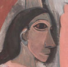
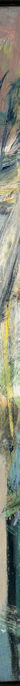
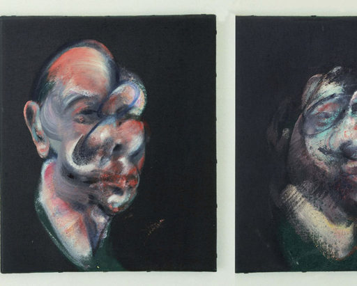
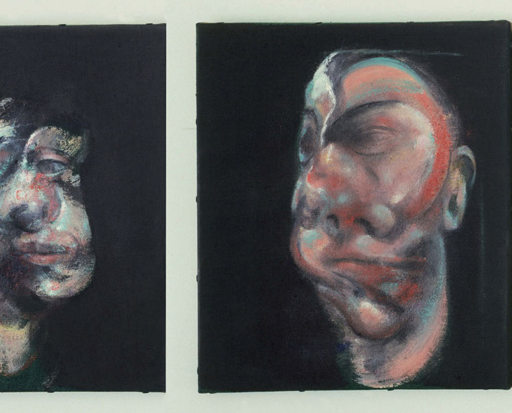
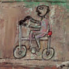
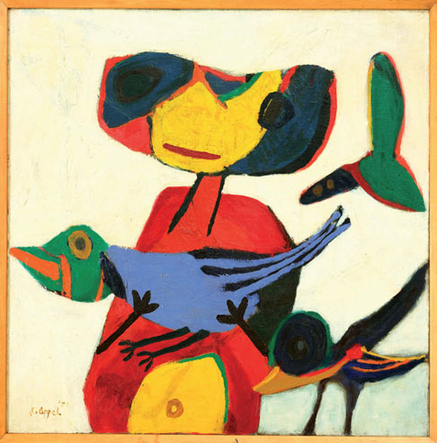
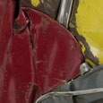
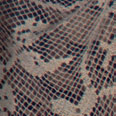
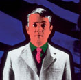

chap1:Mise en page 1 10/06/10 19:05 Page 1
DÉCOUVRIR & COMPRENDRE
L’ART CONTEMPORAIN
chap1:Mise en page 1 10/06/10 19:05 Page 2
chap1:Mise en page 1 10/06/10 19:05 Page 3
DÉCOUVRIR & COMPRENDRE
L’ART CONTEMPORAIN
ALAIN BOURDIE
DOMINIQUE BÉNARD
ANNE-MARIE HOUDEVILLE
chap1:Mise en page 1 10/06/10 19:05 Page 5
Sommaire
Je me sens désemparé devant les œuvres contemporaines
Mais ce ne sont que des taches !
Pourquoi une telle rupture dans l’art au début du XXe siècle ?
C’est n’importe quoi, cet urinoir !
Il n’y a plus que le concept, c’est la faute à Duchamp !
Mais pourquoi emballer un pont ?
Mais c’est un dessin d’école primaire !
Provocation, imposture, l’art actuel est-il décadent ?
Peut-on faire de l’art sur tous les supports et avec tous les matériaux ?
Je veux des noms, comment ça s’appelle ?
Mais finalement, l’art, c’est quoi ?
Quels sont les critères pour évaluer une œuvre contemporaine ?
chap1:Mise en page 1 10/06/10 19:05 Page 7
Préface
Deux artistes plasticiennes, animées par une profonde envie de comprendre les créations contemporaines, plus que de les considérer d’emblée sans intérêt ou scandaleuses, vont questionner Alain Bourdie, conférencier en Histoire de l’Art.
Celui-ci leur paraît tout indiqué pour répondre à leurs nombreuses questions. En effet, il a le talent de savoir se mettre à la portée des amateurs, souvent perplexes devant certaines propositions artistiques. Il démontre très simplement le pourquoi et le comment des démarches par des propos à la fois clairs, profonds et pertinents, mettant en lumière l’essentiel.
Convaincues par son discours, ces deux plasticiennes ont jugé indispensable de vous faire partager le plaisir de comprendre et de pénétrer un monde où, tout naturellement, vous accé-
derez à une nouvelle vision de l’art.
chap1:Mise en page 1 10/06/10 19:05 Page 8
chap1:Mise en page 1 10/06/10 19:05 Page 9
CHAPITRE 1
Je me sens
désemparé devant
les œuvres
contemporaines
chap1:Mise en page 1 10/06/10 19:05 Page 10
10
JE ME SENS DÉSEMPARÉ DEVANT LES ŒUVRES CONTEMPORAINES !
« L’art… ne peut exister
Nous sommes tous, « spécialistes » compris,
ni avoir de portée
confrontés un jour ou l’autre à des œuvres déroutantes, décon-universelle, s’il ne trouve
un écho dans la sensibilité
certantes voire incompréhensibles.
d’un public. »
Notre première réaction est de passer outre, ou de condamner Anton Tapiès
sans autre forme de procès. Et pourtant, ce sont précisément ces œuvres qui devraient retenir tout particulièrement notre attention.
Pourquoi ? Parce qu’il est probable que certaines d’entre elles soient porteuses d’un potentiel de créativité inédite et donc propices à nous enrichir d’un nouveau rapport à l’art et au monde.
D’accord, mais si pour moi elles n’ont
aucun sens, comment faire ?
En premier lieu, il faut mettre de côté nos a priori (au moins momentanément)
Accepter de remettre en cause nos conceptions anciennes et rassurantes. Court-circuiter nos automatismes mentaux confor-tables. Se dire que l’un des intérêts forts de l’art contemporain, c’est justement qu’il se manifeste là où on ne l’attend pas.
Bref, se lancer dans une nouvelle « aventure artistique ». Quoi de plus excitant !
JEAN-PIERRE RAYNAUD,
LE POT DORÉ, 1985,
PARVIS DU CENTRE
GEORGES-POMPIDOU, PARIS.
chap1:Mise en page 1 10/06/10 19:05 Page 11
chap1:Mise en page 1 10/06/10 19:05 Page 12
12
JE ME SENS DÉSEMPARÉ DEVANT LES ŒUVRES CONTEMPORAINES !
Ensuite, regarder vraiment ce qui nous est donné
à voir en utilisant un outil très simple mais quasi infaillible : la description !
Cela peut paraître tellement simple qu’on pense pouvoir s’en passer. Erreur, c’est la condition indispensable d’appropriation de toute œuvre qui se dérobe. Bien souvent, nous croyons avoir vu ce que nous n’avons en fait qu’à peine regardé.
Décrire les différents éléments du sujet si c’est une œuvre figurative, les différents types de forme s’il s’agit d’une composition abstraite. À quel type de format avons-nous affaire : grand, petit, rectangulaire, carré ? Est-il présenté verticalement, horizonta-lement, au mur, au sol ?
La matière est-elle épaisse, grenue, lisse, opaque ou transpa-rente ? La trace de l’outil est-elle sensible ? etc.
Si l’on se sent en jambes, on peut pousser l’opération dans le sens plus difficile, il est vrai, d’une analyse plastique : point fort de l’image ou de la structure en trois dimensions, rapport coloré dominant ; jeu avec la lumière par exemple.
Lire le cartel
Ne pas sous-estimer les indications souvent succinctes mais précieuses du cartel − titre, dimensions, technique et date − qui rapportées à ce que nous venons d’observer peuvent apparaître très éclairantes.
S’il s’agit d’une œuvre contemporaine, pensez qu’elle peut être in situ, c’est-à-dire conçue en relation directe et particulière avec le lieu dans lequel elle se trouve installée (s’interroger à ce sujet).
chap1:Mise en page 1 10/06/10 19:05 Page 13
13
CHAPITRE 1
Être à l’écoute de ce qui se produit en vous
Suite aux deux premières étapes, notre rapport à l’œuvre ne peut qu’être modifié, ne serait-ce qu’un tout petit peu. Essayer alors de saisir de quel ordre est ce « petit peu ». De quelle façon l’œuvre commence à exister devant vous et avec vous.
Est-elle plutôt du côté de l’émotion, du rêve, de la réflexion, de la dénonciation ?
Pensez qu’il n’y a jamais une seule interprétation possible, offi-cielle et définitive d’une œuvre. La vôtre aussi peut être perti-nente pourvu qu’elle s’appuie sur une observation juste.
Et si, malgré tout cela,
il ne se passe toujours rien ?
Il faut alors s’informer, aller chercher des éclairages « Défense de ne pas participer,
extérieurs. Il n’est pas rare aujourd’hui de trouver dans les défense
expositions de cour ts textes de présentation souvent bien de ne pas toucher,
défense
faits, mais aussi des médiateurs dont la fonction est précisé-
de ne pas casser. »
ment de vous faciliter l’accès aux œuvres. Vous pouvez aussi, Les artistes du GRAV
bien sûr, vous plonger dans la lecture approfondie des cata-
(Groupe de recherche
d’art visuel)
logues, magazines et autres ouvrages spécialisés. Mais la densité de leurs contenus se prête généralement mal au temps de la visite. Ils sont beaucoup plus profitables avant ou après, en préparation ou en complément.
chap1:Mise en page 1 10/06/10 19:05 Page 14
14
JE ME SENS DÉSEMPARÉ DEVANT LES ŒUVRES CONTEMPORAINES !
Eh bien,
si après toutes ces explications
je n’aime toujours pas ! ?
C’est très envisageable ! On ne peut pas tout aimer !
Mais il s’agit moins ici de faire aimer à toute force, toutes les œuvres à tout le monde, que de dégager du sens, d’en montrer l’intérêt, en dépassant au moins momentanément le « j’aime »,
« j’aime pas ».
À chacun ensuite, en connaissance de cause, de se faire son opinion, de vibrer ou non.
Il me semble pourtant (pour l’avoir constaté très souvent pour moi-même) qu’il est très rare qu’une œuvre forte ne touche pas, d’une façon ou d’une autre, quelque facette de nous-mêmes.
En paraphrasant le philosophe allemand Friedrich Hegel (1770-1831), on pourrait avancer l’idée que rien de ce qui est authentiquement artistique ne nous est radicalement étranger, pourvu qu’on veuille bien y porter une attention sincère.
Les choses ne se jouent d’ailleurs pas toujours dans l’instant.
Le temps de la maturation, du mûrissement intérieur est souvent nécessaire. Car si l’œuvre est « vraie », elle va continuer à vivre en nous et à prendre sens petit à petit, presque en secret.
Il ne faut enfin pas exclure le manque d’intérêt éventuel de l’œuvre analysée. On passera alors à plus consistant, mais en connaissance de cause.
chap1:Mise en page 1 10/06/10 19:05 Page 15
15
CHAPITRE 1
Soyons concrets !
Appliquons notre méthode d’approche à une
œuvre donnée et perçue généralement comme difficile : Red Plank (1967), de John McCracken (États-Unis, né en 1934), 259 x 45 x 7,5 cm. Résine polyester sur fibre de verre et contreplaqué. Collection Asher, Los Angeles.
Mettons de côté nos a priori
Commençons par mettre de côté, au moins
momentanément, nos a priori défavorables : Non, cette œuvre n’est pas une imposture !
C’est vrai qu’elle ne correspond pas à l’idée qu’on se fait géné-
ralement d’une œuvre d’art, d’un tableau.
C’est vrai aussi que l’extrême simplicité formelle peut déconcerter, donner le sentiment qu’il n’y a rien à voir, ou si peu, que cela devient négligeable. Il s’est pourtant trouvé des collectionneurs qui l’ont appréciée au point de l’acheter, de l’exposer, de la commenter.
Bref, adoptons une attitude ouverte et jugeons sur pièce.
chap1:Mise en page 1 10/06/10 19:05 Page 16
chap1:Mise en page 1 10/06/10 19:05 Page 17
17
CHAPITRE 1
Décrivons ce qui est donné à voir
Qu’avons-nous sous les yeux ?
Un plan coloré d’un rouge intense et rayonnant. Une surface strictement uniforme, lisse et brillante. Aucune trace sensible du geste de l’artiste, de l’empreinte de l’outil, de la facture (signe emblé-
matique de la peinture moderne). Le format est de grandes dimensions (259 x 45 cm), rectangulaire, étroit et vertical.
Cette « peinture » n’est pas accrochée au mur, mais appuyée contre lui. Elle dégage ainsi un espace réel entre elle-même et la paroi, qui génère un riche jeu d’ombres portées sur son environnement immédiat. Cet entre-deux dans lequel circule l’air nous amène à circuler nous-mêmes, à aller voir ce qui se passe derrière. Nous constatons alors que le dos comme la tranche (épaisse de 7,5 cm précise le cartel) du support sont peints tous deux du même rouge que le plan principal. Ce panneau n’est donc pas une simple surface peinte, mais bien un volume coloré s’inscrivant dans l’espace réel du lieu d’exposition.
JOHN MCCRACKEN,
RED PLANK, 1967,
COLL. ASHER, LOS ANGELES.
chap1:Mise en page 1 10/06/10 19:05 Page 18
18
JE ME SENS DÉSEMPARÉ DEVANT LES ŒUVRES CONTEMPORAINES !
Résumons
➥Un plan coloré intense et rayonnant,
➥une surface strictement uniforme, lisse et brillante,
➥aucune trace sensible du geste de l’artiste, de l’empreinte de l’outil, de la facture (signe emblématique de la peinture moderne),
➥un format de grandes dimensions (259 x 45 cm),
rectangulaire, étroit et vertical,
➥une « peinture » qui n’est pas accrochée au mur, mais appuyée contre lui, dégageant ainsi un espace réel entre elle-même et la paroi.
Réfléchissons
à partir des observations faites
Tout en restant formellement très simple, cette œuvre apparaît complexe dans ses implications.
Car nous sommes à la fois en présence d’un « objet » qui ressemble à un tableau dans ce qu’il peut avoir de plus élémentaire : une surface colorée, la fameuse − «… surface plane recouverte de couleurs en un certain ordre assemblées » de Maurice Denis (peintre français, 1870-1943 − et une structure qui s’en distingue à bien des égards :
➥absence radicale de toute représentation ou composition, fut-elle abstraite ;
➥format allongé très éloigné dans ses proportions de celui du tableau traditionnel ;
chap1:Mise en page 1 10/06/10 19:05 Page 19
19
CHAPITRE 1
➥absence de cadre qui laisse visible la tranche du support peint. Dans un tableau traditionnel, tout est fait pour que le regardeur oublie la matérialité de l’œuvre, au profit de l’image représentée. L’épaisseur du châssis est dissimulée derrière le cadre et son dos étroitement plaqué au mur par son mode d’accrochage.
John McCracken affirme ici non pas l’espace illusionniste de la peinture − « cette fenêtre ouverte sur le monde » qui occupe les artistes depuis la Renaissance et dont la perspective classique est une des manifestations les plus achevées − mais une structure concrète existant dans l’espace réel du visiteur, c’est-à-dire celui de la galerie.
Le temps et l’espace de l’œuvre coïncident avec le temps et l’espace du spectateur.
L’ici et maintenant de la « peinture » nous rétablit dans l’ici et maintenant de nous-mêmes la regardant.
Confirmation existentielle de notre présence au monde ?
On peut en éprouver une certaine jubilation.
Jubilation renforcée sans doute par le caractère exceptionnel-lement rutilant de cette forme colorée. À quoi cela tient-il ?
Revenons au cartel
Intéressons-nous de nouveau au cartel. On y
apprend après un décryptage plus attentif que cette œuvre n’a pas été réalisée au moyen des techniques traditionnelles de la chap1:Mise en page 1 10/06/10 19:05 Page 20
20
JE ME SENS DÉSEMPARÉ DEVANT LES ŒUVRES CONTEMPORAINES !
peinture, mais avec des matériaux beaucoup plus innovants : du polyester sur fibre de verre, un procédé très proche de certaines techniques de carrosserie automobile.
Ce choix des matériaux ainsi que le traitement parfaitement lisse des surfaces confèrent incontestablement à l’« objet » un éclat vif et dur qui le tire plus du côté de l’esthétique industrielle que de celui de la peinture de chevalet. Une facticité qui traduit sans doute quelque chose de l’Amérique des années dix neuf cent soixante (1967 nous apprend le cartel) matérialiste, technique… et puritaine ajouteront certains.
Couleur et support se confondent pour atteindre à une forme essentielle et pure.
Une structure tridimensionnelle exempte de tout illusionnisme, affect, narration, rêve, symbole, pour affirmer sa pure présence.
Une version du réalisme moderne, à la différence près que cette œuvre ne nous propose plus la représentation du réel, mais le réel lui-même.
Prolongeons notre approche personnelle
par la lecture de textes spécialisés
« Plus l’œuvre d’art
Finalement cette œuvre vous fascine, si, si… Vous voulez est pure de sujets
en savoir plus… Vous vous tournez alors vers des textes extérieurs, plus elle est
libre et élaborée. »
spécialisés, des ouvrages historiques.
Ad. Reinhardt
chap1:Mise en page 1 10/06/10 19:05 Page 21
21
CHAPITRE 1
Vous y apprenez que :
➥John McCracken est assimilé à l’art minimal : mouvement né aux États-Unis dans les années 1960 ;
➥John McCracken appartient plus précisément à l’école californienne plus sensuelle et séductrice que celle très austère de la côte Est (Donald Judd, Sol Lewitt, Carl André…) Vous notez que l’art minimal ne vise pas à minimiser l’art comme on le croit parfois, mais à se débarrasser du superflu pour atteindre à l’essentiel. « Minimal signifie pour moi la plus grande économie pour atteindre la plus grande fin », déclarait Carl André.
Vous trouvez aussi probablement la confirmation de certaines de vos intuitions-réflexions.
Vous aviez remarqué le caractère lisse et impersonnel du traitement pictural.
Et vous apprenez que le mouvement minimal s’oppose à l’expressionnisme abstrait : mouvement de la génération précé-
dente, celle des Jackson Pollock et Willem De Kooning pour qui, peindre, c’est s’exprimer fortement : « J’exprime mes sentiments plutôt que je ne les illustre », disait Jackson Pollock.
Confirmation encore à la lecture des déclarations de John McCracken lui-même : « Je me préoccupe de faire des choses qui existent et fonctionnent dans l’espace réel de façon inté-
grée et non statique… » Ou encore : « Je considère la couleur comme un matériau de structure que j’utilise pour construire des formes qui m’intéressent… » Propos qui renvoient directement à vos considérations sur le caractère de structure colorée inscrite dans l’espace réel de la galerie.
chap1:Mise en page 1 10/06/10 19:05 Page 22
22
JE ME SENS DÉSEMPARÉ DEVANT LES ŒUVRES CONTEMPORAINES !
Mais l’intérêt d’une œuvre réside aussi dans la façon dont elle s’inscrit dans l’histoire de l’ar t. Sur le plan historique, l’art minimal se situe à la croisée des chemins de l’art moderne et contemporain.
Moderne, il l’est comme ultime aboutissement de ce qui a été engagé par Édouard Manet au milieu du XIXe siècle puis repris et poussé par Henri Matisse, Piet Mondrian ou Ad.
Reinhardt par exemple. C’est-à-dire l’abandon du sujet édifiant (symbolique, religieux, historique…), du narratif au profit de l’autonomie de l’œuvre, de sa simplification formelle, du plan coloré et du « fait pictural » (de la peinture pure).
Quelques réflexions pour conclure
Red Plank n’est pourtant pas un simple aboutissement historique, il ouvre aussi de nouvelles perspectives. Tout se passe en effet comme si ce « tableau » décroché de sa cimaise glissait à la fois dans l’espace et dans l’histoire vers une autre identité artistique.
Sa position oblique, intermédiaire, entre pure frontalité et tridi-mensionnalité lui confère un statut incertain, ambigu.
Sommes-nous devant une peinture ou devant une sculpture ?
Ni l’une ni l’autre véritablement, mais plutôt confrontés à une œuvre d’un nouveau type qui peut être envisagée comme une des prémices de ce que l’on appellera plus tard les « installations »
(si florissantes dans l’art aujourd’hui.)
chap1:Mise en page 1 10/06/10 19:05 Page 23
23
CHAPITRE 1
Par ailleurs, cette œuvre (ainsi que le mouvement minimal dans son ensemble), de par sa forte réflexivité, peut être regardée comme annonciatrice de l’art conceptuel. N’oublions pas que c’est à un artiste minimaliste, Sol Lewitt, que l’on doit cette déclaration : « L’œuvre d’art est la manifestation d’une idée. C’est une idée et pas un objet. »
Si Red Plank reste encore un objet, celui-ci semble plus intéressant par les réflexions qu’il engage que par ses seules qualités visuelles.
Nous pourrions continuer ainsi longuement ces échanges fruc-tueux entre sentiments personnels et textes choisis.
Mais une chose est désormais certaine : malgré son extrême simplicité formelle, Red Plank de John McCracken n’est pas vide de signification, car comme le disait Robert Morris (autre artiste minimaliste) : « Simplicité de forme ne signifie pas nécessairement simplicité de l’expérience. »
chap2:Mise en page 1 10/06/10 19:12 Page 24
chap2:Mise en page 1 10/06/10 19:12 Page 25
CHAPITRE 2
Où est le sujet ?
chap2:Mise en page 1 10/06/10 19:12 Page 26
26
OÙ EST LE SUJET ?
Lorsqu’une peinture n’a pas de sujet,
a-t-elle encore du sens ?
C’est vrai, lorsque le sujet « manque », on peut avoir l’impression que l’œuvre n’a pas de sens ! Or le sujet est souvent la partie la plus superficielle de l’image…
La partie la plus superficielle,
que voulez-vous dire ?
« L’abstraction rend
Par exemple, chez les cubistes, le sujet (natures mortes, un son plus pur. »
figures…) n’est que prétexte à renouveler une vision artistique, Wassily Kandinsky
à questionner autrement le volume et l’espace.
Toute œuvre d’art plastique de quelque époque que ce soit est fondamentalement abstraite, dans le sens où elle est avant tout une organisation de formes, de couleurs, de matières en vue d’atteindre la sensibilité humaine.
Comparez ces deux œuvres du XIXe siècle :
➥ La Route, 1865-1870, de Jean-Baptiste Camille Corot (1796-1875), France, Paris, Musée d’Orsay
➥ Le Jardin du Dr Gachet, 1890, de Vincent Van Gogh (1853-1890), Pays-Bas, Paris, Musée d’Orsay.
Elles nous présentent toutes les deux des sujets très similaires : paysages avec des arbres comme éléments principaux. Alors, pourquoi ressentons-nous immédiatement des émotions diffé-
rentes devant l’un et l’autre de ces tableaux ?
Ce n’est pas lié aux sujets puisqu’ils sont quasiment identiques !
chap2:Mise en page 1 10/06/10 19:13 Page 27
27
CHAPITRE 2
JEAN-BAPTISTE CAMILLE COROT,
LA ROUTE, 1865-1870,
MUSÉE D’ORSAY, PARIS.
VINCENT VAN GOGH,
LE JARDIN DU DR GACHET, 1890,
MUSÉE D’ORSAY, PARIS.
chap2:Mise en page 1 10/06/10 19:13 Page 28
28
OÙ EST LE SUJET ?
Non, c’est à cause de la façon dont les éléments formels ont été manipulés et travaillés par les peintres.
Chez Vincent Van Gogh, une matière picturale épaisse, des couleurs presque pures, des formes aigües ou emportées ainsi qu’une touche extrêmement dynamique expriment à la fois violence et jubilation.
Au contraire, chez Camille Corot, des tons plutôt éteints, des masses souples et diffuses ainsi qu’une touche légère et trans-parente traduisent une certaine sérénité mélancolique.
C’est donc bien le « jeu abstrait » des formes, des couleurs et des matières qui provoque l’émotion en premier lieu et non le sujet représenté.
Je ne prétends nullement que ce dernier n’a aucune importance, mais je dis qu’il est, dans bien des cas, la partie la plus superficielle d’une œuvre.
« Mes tableaux sont
Durant des siècles, l’art a traité de sujets mythologiques, des métaphores de
religieux, de paysages, de natures mortes, donnant à voir une l’harmonie universelle. »
image immédiatement reconnaissable. Il semblait plus facile Piet Mondrian
alors d’apprécier l’intérêt d’une œuvre.
Après les romantiques, qui remettent en question la représentation classique et les impressionnistes qui, rejetant tout acadé-
misme, divisent la touche, brouillent les contours, mêlent les formes, deux grands mouvements picturaux favorisent particulièrement la naissance de l’art abstrait :
➥le fauvisme, qui libère la couleur ;
➥le cubisme, qui met en question l’espace classique.
chap2:Mise en page 1 10/06/10 19:13 Page 29
29
CHAPITRE 2
Peut-on dater de façon précise
la première œuvre abstraite de l’histoire ?
Oui, la première œuvre strictement abstraite semble être une « La perception esthétique transpose
aquarelle de Wassily Kandinsky réalisée en 1910, dans un l’expérience la plus intime
contexte artistique général où plusieurs artistes d’avant-garde de notre corps dans
la nature inanimée […].
tournent autour de cette notion (Franz Kupka, Francis Picabia…) L’organisation de notre
sans franchir le pas décisif.
propre corps est la forme
sous laquelle nous
L’art abstrait a donc un siècle.
concevons tout le
corporel. »
Après la Première Guerre mondiale, Paris devient la capitale de Heinrich Wölfflin
l’art abstrait. Puis celui-ci gagne les États-Unis où il prend un
« Les formes sont
essor considérable à partir des années 1940 et 1950 avec perçues dans leurs
l’École de New York.
réalités physiques comme
des équivalences de nos
sensations et expériences
corporelles. »
Et pour conclure,
Heinrich Wölfflin
quelle est la meilleure façon
d’aborder l’art abstrait ?
Surtout ne pas chercher à identifier à toute force des « Peindre n’est pas dépeindre, comme écrire
éléments figuratifs, mais se laisser gagner par la peinture.
n’est pas décrire. »
L’art abstrait ne raconte rien, il invite à la contemplation, spiri-Georges Braque
tuelle dans certains cas (Wassily Kandinsky, Piet Mondrian, Mark Rothko) ou spéculative dans d’autres cas (Théo Van Doesburg, Franck Stella, Bernard Frize).
chap2:Mise en page 1 10/06/10 19:13 Page 30
30
OÙ EST LE SUJET ?
1. PABLO PICASSO,
LA GUITARE,1913,
MUSEUM OF MODERN ART
(MOMA), NEW YORK.
Ces œuvres vous semblent-elles abstraites
à première vue ?
Œuvre 1
Dans l’œuvre 1, vous reconnaissez spontanément certains éléments du monde réel : une guitare, un violon peut-être, mais certainement un instrument de musique… On est face à une image déconstruite mais reconnaissable, ce n’est donc pas une œuvre abstraite. Il s’agit ici de La Guitare, de Pablo Picasso dans sa période cubiste.
chap2:Mise en page 1 10/06/10 19:13 Page 31
31
CHAPITRE 2
2. WASSILY KANDINSKY,
3. PIET MONDRIAN,
TACHE NOIRE 1, 1912,
COMPOSITION EN ROUGE BLEU
RUSSIAN STATE MUSEUM,
ET JAUNE, 1937-1942,
ST. PETERSBURG.
MUSEUM OF MODERN ART
(MOMA), NEW YORK.
Œuvre 2
En revanche celle-ci ne permet pas de reconnaître un seul élément figuratif, on peut toujours imaginer, projeter, mais les réponses seront différentes selon les spectateurs. En tout cas, il n’était absolument pas dans l’intention de Wassily Kandinsky avec Tache noire 1 de représenter quelque chose, même de façon allusive. Voici bien une œuvre abstraite.
Œuvre 3
Dans la composition en rouge bleu et jaune de Mondrian, on voit tout de suite qu’aucun objet n’est représenté. Les formes géométriques n’étant pas du domaine du concret, on peut dire que ce tableau est strictement abstrait.
chap2:Mise en page 1 10/06/10 19:13 Page 32
32
OÙ EST LE SUJET ?
Est abstrait « tout art
Anecdotes
qui ne contient aucun
rappel, aucune évocation
À L’ENVERS. Wassily Kandinsky, généralement considéré comme de la réalité, que cette
« l’inventeur » de l’art abstrait, raconte ce qui lui est arrivé un réalité soit ou ne soit pas
certain jour de l’année 1910 alors qu’il se trouvait dans son atelier : le point de départ de
l’artiste ».
« Je quittai mon dessin plongé dans mes pensées, et j’ouvris la porte de l’atelier, lorsque je me trouvai brutalement en face Michel Seuphor
d’un tableau d’une beauté indescriptible et incandescente.
Stupéfait, je m’arrêtai sur place, fasciné par cette œuvre. La peinture ne possédait pas de sujet, elle était uniquement composée de taches lumineuses de couleur. Finalement je m’approchai et ce fut alors seulement que je vis ce que c’était réellement : ma propre toile qui était posée de côté sur le chevalet. Une chose alors me fut parfaitement claire : l’objectivité, la description des objets n’avaient aucune place dans mes toiles et elles leur étaient même nuisibles1. »
VERS UN MALENTENDU… En 1958, l’architecte Philip Johnson commande à Mark Rothko neuf peintures murales destinées à la salle du restaurant Four Seasons à Manhattan. Après avoir longuement travaillé avec beaucoup de sérieux sur cette commande, l’artiste se rend compte que ce lieu de luxe et de plaisir n’est pas fait pour accueillir ses peintures. Il refuse de les livrer et en 1969, les donne à la Tate Gallery de Londres, où l’environnement est plus adéquat.
CACHEZ CE VERT… Piet Mondrian avait la phobie du vert.
Cette couleur n’est jamais présente dans ses peintures. On raconte que lorsqu’il était invité à déjeuner chez des amis, il s’arrangeait pour tourner le dos à la fenêtre afin de ne pas apercevoir la végétation du jardin…
VERTICAL. Adepte farouche de l’orthogonalité, Piet Mondrian rompt ses relations avec son ami peintre Théo Van Doesburg parce que celui-ci avait osé introduire des obliques dans ses compositions abstraites.
chap2:Mise en page 1 10/06/10 19:13 Page 33
33
CHAPITRE 2
MARK ROTHKO,
ORANGE AND YELLOW, 1956,
GALERIE ALBRIGHT-KNOX, BUFFALO,
NEW YORK.
chap3:Mise en page 1 11/06/10 12:02 Page 34
chap3:Mise en page 1 11/06/10 12:02 Page 35
CHAPITRE 3
Mais ce ne sont
que des taches !
chap3:Mise en page 1 11/06/10 12:02 Page 36
36
MAIS CE NE SONT QUE DES TACHES !
Mais ce ne sont que des taches !
C’est à peu près cela ! On parle même de tachisme2 à propos de ce type d’œuvre.
Mais un tableau peut-il se constituer
à partir de simples taches ?
« Une forme est une
Oui, une tache est une forme parmi d’autres, mais qui a…
chose vivante. »
mauvaise réputation !
Barnett Newman
Mauvaise réputation ?
« Faire une esquisse,
Dès l’enfance, on nous apprend à considérer les taches comme c’est mettre en ligne
équivalentes de l’erreur, de la souillure, du mal absolu, à éradi-des idées, faire des taches,
c’est se suggérer
quer définitivement.
des idées. »
Cela peut se justifier dans le cadre de certains apprentissages.
Alexandre Cozens
Mais il en va tout autrement en ce qui concerne l’expression plastique.
« C’était plutôt la tache
qui prenait un sens
Un des efforts fondamentaux de l’abstraction des années 1940
en elle-même. »
et 1950, notamment avec l’expressionnisme abstrait américain3, Hans Hartung
tient à la révélation des capacités expressives de la tache. Le vocabulaire tachiste est d’ailleurs d’une richesse quasi infinie : taches explosives ou doucement étales, élégantes ou confuses, régulières ou mouvementées, etc. Chacune d’elles renvoie à des sentiments différents.
chap3:Mise en page 1 11/06/10 12:02 Page 37
37
CHAPITRE 3
SAM FRANCIS,
TOWARDS DISAPPEARANCE II, 1958,
MUSEUM OF MODERN ART
(MOMA), NEW YORK.
chap3:Mise en page 1 11/06/10 12:02 Page 38
38
MAIS CE NE SONT QUE DES TACHES !
VICTOR HUGO,
TACHES VOYAGE,
BIBLIOTHÈQUE NATIONALE, PARIS.
CLICHÉ BIBLIOTHÈQUE NATIONALE
DE FRANCE.
« Pour le monde invisible
Le grand Léonard de Vinci lui-même notait les capacités sugges-qui réside en nous,
tives des taches d’humidité observées sur un mur. Alexandre une tache accidentelle,
une éclaboussure
Cozens, le célèbre aquarelliste anglais du XVIIIe, sollicitait égale-de couleur prennent une
ment la tache comme déclencheur de l’imaginaire, préfigurant importance équivalente
à celle de l’événement
les taches de Victor Hugo quelques années plus tard.
le plus grave. »
Mais c’est au XXe siècle surtout que de nombreux artistes vont Harold Rosenberg
célébrer les vertus de la forme libre.
La tache peut sans doute apparaître alors comme une sorte de retour du refoulé dans le domaine des formes. Il est d’ailleurs troublant de constater que cette évolution est contemporaine de celle de la psychanalyse et des théories sur l’inconscient.
L’homme n’est plus un être de pure raison et de maîtrise de soi.
Des forces cachées travaillent en secret au plus profond de lui-même. Le lapsus, le hasard, la tache peuvent constituer des outils de révélation de cet espace intérieur refoulé.
L’artiste ne va plus à sa toile avec une image en tête, mais avec des matériaux qui vont agir sur d’autres matériaux.
C’est le résultat de cette rencontre qui produit l’œuvre.
chap3:Mise en page 1 11/06/10 12:02 Page 39
39
CHAPITRE 3
Anecdotes
L’ÉGOUTTEUR. « Jack l’Égoutteur », tel était le surnom que ses détracteurs donnaient à Jackson Pollock. En effet, ce célèbre peintre américain des années 1940-1950, emblématique du tachisme, ne peignait plus avec des pinceaux, mais en faisant s’écouler la couleur directement sur sa toile posée au sol.
EN VOGUE. En 1950, Jackson Pollock réalise plus de 50 œuvres dont Number 1 qui est la première d’une série de drip paintings (technique qui consiste à égoutter sur la toile un bâton trempé dans la peinture en y associant le geste) de grandes dimensions.
Elles seront utilisées comme arrière-plan pour des photos de mode dans le magazine Vogue de mars 1951.
CAFÉ. Dans les années 1930, Hans Hartung (Allemagne, 1904-1989) connaît une vie difficile. Il n’a pas assez d’argent pour acheter de la peinture, alors il s’installe à la terrasse des cafés, commande un café-crème, ce qui permettait à l’époque d’obtenir de l’encre et du papier. En trempant son doigt dans l’encrier, il trace des spirales, des tourbillons pour calmer son angoisse, et c’est ainsi que naîtront par la suite ses premières œuvres, la série des « taches d’encre ».
COUVERTURE DE PRESSE
POUR L’EXPOSITION
« JACKSON POLLOCK », 1988
MUSEUM OF MODERN ART
(MOMA), NEW YORK.
chap4:Mise en page 1 10/06/10 18:50 Page 40
chap4:Mise en page 1 10/06/10 18:50 Page 41
CHAPITRE 4
Je n’y vois
que du bleu !
chap4:Mise en page 1 10/06/10 18:50 Page 42
42
JE N’Y VOIS QUE DU BLEU !
Les monochromes d’Yves Klein
ne proposent qu’un bleu uniforme,
cela suffit-il à faire une œuvre ?
« Le bleu,
Vous ne voyez qu’un seul bleu, certes, mais quel
ce néant attirant… »
bleu ! Un outremer saturé et rayonnant tel qu’on n’en avait Johann Wolfgang
jamais vu jusqu’alors. Yves Klein (France 1928-1962) « réin-von Goethe
vente » véritablement cette couleur avec le concours d’un chimiste4 qui lui permet de fixer sur la toile le pigment, sans rien perdre de son intensité chromatique5. L’ar tiste fera breveter sa formule sous l’appellation IKB6 (International Klein Blue).
Mais peut-on apprécier
cette œuvre si on ne connaît pas
le discours qui va avec ?
« Je peignais des surfaces
Bien sûr, mais pour que la magie opère, il faut le contact monochromes pour voir,
direct avec la toile qui, du fait de son grand format et de la de mes yeux voir, ce que
l’absolu avait de visible. »
vibration particulière de sa matière comme de son accrochage Yves Klein
à distance du mur, envahit notre champ visuel et nous immerge dans la couleur.
YVES KLEIN,
MONOCHROME BLEU, 1961,
MUSEUM OF MODERN ART
(MOMA), NEW YORK.
chap4:Mise en page 1 10/06/10 18:50 Page 43
43
CHAPITRE 4
chap4:Mise en page 1 10/06/10 18:50 Page 44
44
JE N’Y VOIS QUE DU BLEU !
Plus qu’une contemplation passive, c’est une expérience que nous propose l’artiste, celle d’un bain visuel de couleur, d’une imprégnation intérieure de bleu.
La photographie ne permet en aucune façon de vivre cette aventure.
Le discours est donc superflu ?
« Pour le bleu et au-delà
Ni indispensable, ni superflu, à mon avis. On peut du bleu, il se sent affleuré
éventuellement s’en passer si l’œuvre fait sens pour nous d’empar le frisson de l’absolu,
une figuration tangible
blée, mais il enrichit incontestablement notre regard à partir de l’espace infini. »
du moment où l’on en prend connaissance.
Pierre Restany
Par exemple, lorsqu’on sait que pour Yves Klein le bleu a une signification symbolique et métaphysique, qu’il renvoie pour lui à une sorte de révélation spirituelle.
Un certain jour de l’été 1946, alors qu’il était allongé sur la plage de Nice, fixant le bleu profond du ciel, il est saisi par une intuition qui traversera toute son œuvre : « Le bleu est l’invisible devenu visible. »
Dès lors, son projet artistique consistera à tenter de peindre le vide, l’espace, de « rendre compte de la réalité de l’immaté-
riel ». Il utilisera désormais le bleu comme « couleur d’impré-
gnation spirituelle qui confère aux objets et aux êtres une sorte d’immatérialité ».7
chap4:Mise en page 1 10/06/10 18:50 Page 45
45
CHAPITRE 4
Anecdotes
LE VIDE. Le 28 avril 1958, une foule se presse au vernissage de l’exposition d’Yves Klein à la galerie Iris Clert, intitulée
« Le vide ». La galerie est absolument vide, les murs sont blancs et nus. On sert un cocktail bleu… Un peu plus tard, les visiteurs découvriront leur urine bleue… Klein. Albert Camus inscrira une mention poétique dans son livre d’or : « Avec le vide, les pleins pouvoirs… ».
LE PLEIN. Deux ans plus tard, en 1960, son ami le sculpteur nouveau réaliste Arman propose à Paris une exposition appelée « Le Plein ».
À cette occasion, il remplit la totalité de la galerie Iris Clert du sol au plafond de détritus en tous genres dont certains, pourrissant, finiront par incommoder fortement le voisinage.
ORANGE. En 1955, au Salon des réalités nouvelles, Yves Klein propose un monochrome orange qui est rejeté : il a refusé d’y ajouter un point noir, ce qui lui aurait été suggéré pour transformer son tableau en une œuvre abstraite.
chap5:Mise en page 1 11/06/10 12:05 Page 46
chap5:Mise en page 1 11/06/10 12:05 Page 47
CHAPITRE 5
Pourquoi une telle
rupture dans l’ar t
au début du XXe siècle ?
chap5:Mise en page 1 11/06/10 12:05 Page 48
48
POURQUOI UNE TELLE RUPTIRE DANS L’ART AU DÉBUT DU XXe SIÈCLE ?
La notion de rupture est centrale à la modernité.
Au début du XXe siècle, on assiste effectivement à une volonté farouche de rompre avec le passé, la tradition. Il apparaît nécessaire de frapper fort pour se dégager du carcan étouffant de l’académisme.
Néanmoins, à cette époque, la majorité des amateurs d’art restent très attachée aux formes artistiques traditionnelles. On commence tout juste à accepter les impressionnistes, et les fauvistes font scandale !
Le monde occidental subit à ce moment-là une des mutations les plus profondes de son histoire qui touche à tous les secteurs d’activité : politique, économique, technique, social et bien sûr culturel. La rupture artistique renvoie, exprime, traduit ce bouleversement général.
Oui, mais à quoi est dû
un tel changement ?
Durant le XIXe siècle, l’invention de la photographie a eu des répercussions décisives sur l’évolution des arts plastiques et l’avènement de l’art moderne.
Jusqu’alors toutes les images existantes étaient produites par la main de l’homme. Seul le peintre ou le sculpteur pouvait réaliser un portrait par exemple.
chap5:Mise en page 1 11/06/10 12:05 Page 49
49
CHAPITRE 5
À partir de la deuxième moitié du XIXe siècle, une autre possibilité existe : la photographie. Un moyen mécanique de produire des images rapidement, à peu de frais et très convain-cantes du point de vue de la ressemblance.
On imagine le bouleversement qu’une telle évolution introduit dans les milieux artistiques, notamment auprès de ceux qui considèrent que la fonction première de l’art est la représentation.
Je comprends !
Alors ça va tout changer !
Et le devenir de la peinture ?
Justement beaucoup envisagent même la mort de la peinture… D’autres, au contraire, ce seront les modernes, voient là une opportunité historique de recentrer l’art sur ses fonctions profondes et essentielles : recherches formelles, expression et questionnement. Dans cette logique, certains iront jusqu’à éliminer toute représentation, ce sera l’art abstrait, inauguré par Wassily Kandinsky en 1910.
chap5:Mise en page 1 11/06/10 12:05 Page 50
50
POURQUOI UNE TELLE RUPTIRE DANS L’ART AU DÉBUT DU XXe SIÈCLE ?
chap5:Mise en page 1 11/06/10 12:05 Page 51
51
CHAPITRE 5
PABLO PICASSO,
LES DEMOISELLES D’AVIGNON, 1907,
MUSEUM OF MODERN ART
(MOMA), NEW YORK.
WILLIAM BOUGUEREAU,
LA NAISSANCE DE VÉNUS, 1879,
MUSÉE D’ORSAY, PARIS.
chap5:Mise en page 1 11/06/10 12:05 Page 52
52
POURQUOI UNE TELLE RUPTIRE DANS L’ART AU DÉBUT DU XXe SIÈCLE ?
Mais vous parliez
de bouleversement général…
On pourrait ajouter d’autres causes fortes à cette rupture, dans le domaine des innovations techniques.
L’invention de nouveaux moyens d’observation du monde tels que le télescope ou le microscope qui, en renvoyant aux notions de l’infiniment grand et de l’infiniment petit, mettent en question la notion même de réel.
La vitesse, liée au machinisme, qui transforme notre rapport quotidien à l’espace : on n’a pas la même vision d’un paysage que l’on traverse à pied, en voiture ou en avion !
On perd en valeurs descriptives et anecdotiques, on gagne en valeur de synthèse.
Et l’on sait à quel point l’art moderne cherchera la simplification formelle jusqu’au minimalisme des années 1960.
Et comment réagissent les artistes ?
Les artistes vont être amenés à remettre en cause leur fonction comme leurs pratiques. Le rejet des canons traditionnels provoque une libération sans précédent des capacités créatrices. On se jette à corps perdu dans l’expérimentation tous azimuts. On se livre à l’expression pure, on s’interroge sur l’identité de l’art lui-même. Il s’agit de réinventer l’art. Tout devient possible. Un art neuf pour un monde neuf. C’est ce qu’on appellera les « avant-gardes ».
chap5:Mise en page 1 11/06/10 12:05 Page 53
53
CHAPITRE 5
Il faut cependant ajouter que si la rupture est forte, elle n’est pas absolue. Certains commentateurs préfèrent relever les
« continuités » entre passé et présent de l’art. Cette position a l’avantage de permettre aux sceptiques de l’art moderne et contemporain de trouver des appuis et des repères rassurants.
Si les formes évoluent parfois de façon radicale avec leur époque, certaines préoccupations de fond persistent.
Parmi les œuvres de rupture qui comptent au début du XXe siècle, il faut citer en premier lieu Les Demoiselles d’Avignon de Picasso.
Un grand tableau de plus de 244 x 235 cm, peint en 1907 et qui aujourd’hui encore garde sa charge déstabilisante. Une peinture qui peut être vécue comme un choc visuel, violent.
Une œuvre qui chamboule toutes les lois et les repères traditionnels de la représentation. Elle opère en particulier deux grandes ruptures : rupture avec l’harmonie classique, rupture avec la vraisemblance naturaliste.
Il faut d’abord préciser que ces demoiselles-là ne sont pas de simples baigneuses à la façon d’Édouard Manet ou Paul Cézanne, mais des prostituées exhibant avec violence et provocation leurs corps au passant.
Le premier titre du tableau (donné par Pablo Picasso lui-même), Le Bordel d’Avignon, est à lui seul explicite.

chap5:Mise en page 1 11/06/10 12:05 Page 54
54
POURQUOI UNE TELLE RUPTIRE DANS L’ART AU DÉBUT DU XXe SIÈCLE ?
Mais pourquoi ces visages monstrueux
sur la droite ?
Ils sont l’expression effrayante des ravages de la syphilis, car le thème sous-jacent de cette scène (des croquis préparatoires en font foi) est bien la mort par le sexe qui, à ce moment-là, décime cruellement ces populations méprisées.
Pablo Picasso cherche à dénoncer l’hypocrisie sociale de l’époque qui se voile la face en matière de mœurs comme en matière d’art. Et si le message passe avec autant de force, c’est parce qu’il ne se contente pas d’illustrer un propos, il invente une forme nouvelle, radicale et violente pour l’exprimer. Il casse la vraisemblance naturaliste à laquelle il se soumettait encore quelques mois auparavant durant les périodes bleue et rose. Il s’attaque avec une audace inouïe au thème classique par excellence du nu féminin, symbole de beauté, de douceur et de volupté. Il le met « cul par-dessus tête » si vous me passez l’expression.
chap5:Mise en page 1 11/06/10 12:05 Page 55
55
CHAPITRE 5
Ce qui est très moderne et très neuf avec ce tableau, c’est
« L’œuvre d’art devient
un fait pictural en soi. »
précisément cela. Il ne représente pas une scène violente, il Georges Braque
l’exprime à partir de la forme, libérée du réalisme anatomique.
C’est à l’esprit qu’il s’adresse plus qu’à l’œil : « Je ne peins pas les choses comme je les vois mais comme je les pense », décla-rera plus tard Picasso.
Coudes aigus comme des fers de lance, seins géométriques, oreilles en huit, nez démesurés rabattus de profil sur des visages vus de face (amorce de la vision multiple du cubisme à venir).
Les têtes de droite, visiblement inspirées de la sculpture africaine, hurlent l’inhumain de toutes leurs chairs meurtries par la morsure cruelle d’un graphisme strié.
Anatomies en pagaille, aux antipodes du beau classique, jugé par Pablo Picasso mensonger. « L’enseignement académique de la beauté est faux, on nous a trompés, mais si bien trompés qu’on ne peut plus retrouver même l’ombre d’une vérité. Les beautés du Parthénon, les Vénus, les Nymphes, les Narcisses sont autant de mensonges. L’art n’est pas l’application d’un canon de beauté, mais ce que l’instinct et le cerveau peuvent concevoir indépendamment du canon. »
Pierre Daix, biographe de référence de Pablo Picasso, cite très opportunément Arthur Rimbaud à propos des « demoiselles » : « Jadis, si je me souviens bien, ma vie était un festin où s’ouvraient tous les cœurs, où tous les vins coulaient. Un soir, j’ai assis la Beauté sur mes genoux. Et je l’ai trouvée amère. Et je l’ai injuriée8. »
chap5:Mise en page 1 11/06/10 12:05 Page 56
56
POURQUOI UNE TELLE RUPTIRE DANS L’ART AU DÉBUT DU XXe SIÈCLE ?
« La peinture n’est pas
Refus de la beauté classique, à plus forte raison académique, faite pour décorer
liberté prise avec l’unité stylistique (de gauche à droite le trai-les appartements, elle est
un instrument de guerre
tement pictural évolue fortement) déconstruction des formes offensive et défensive
contre l’ennemi. »
et de l’espace euclidien traditionnel, références ouvertes aux Pablo Picasso
cultures primitives et non occidentales. Bref, tout est là pour faire de cette œuvre un concentré explosif sur le plan artistique et humain !
Les Demoiselles d’Avignon ne constituent pas l’œuvre la plus achevée de Pablo Picasso ( Guernica, par exemple, est bien plus aboutie). Mais elles sont, de l’aveu même de l’artiste, une
« première toile d’exorcisme ». Une œuvre expérimentale donc, qui fait exploser tous les codes visuels et artistiques de son époque dans une double attitude libératrice de destruction/création, qui mènera l’historien de l’art René Huyghe à la qualifier avec beaucoup de finesse, de « danse de Shiva » (divi-nité hindou qui incarne à la fois la destruction et la création).
chap5:Mise en page 1 11/06/10 12:05 Page 57
57
CHAPITRE 5
Anecdotes
PÉTROLE. Les amis proches de Pablo Picasso se trouvent déconcertés par cette proposition sidérante des Demoiselles d’Avignon.
Georges Braque, lui-même artiste d’avant-garde et futur compagnon de route du cubisme, avait confié à Pablo Picasso : « C’est comme si tu voulais nous faire manger de l’étoupe ou boire du pétrole pour cracher du feu. »
PENDU. André Derain, audacieux peintre fauviste de l’époque, s’inquiète pour la santé mentale de son auteur : « Ce tableau est une entreprise désespérée, on trouvera un jour Pablo Picasso pendu derrière. »
EFFRAYÉ. On peut penser que Pablo Picasso lui aussi fut effrayé de sa propre création, car il roulera sa toile et la stockera dans un coin de son atelier durant de nombreuses années. Il la montrera publiquement pour la première fois lors d’une exposition en 1916.
chap6:Mise en page 1 11/06/10 11:15 Page 58
chap6:Mise en page 1 11/06/10 11:15 Page 59
CHAPITRE 6
C’est
n’impor te quoi,
cet urinoir !
chap6:Mise en page 1 11/06/10 11:15 Page 60
60
C’EST N’IMPORTE QUOI, CET URINOIR !
Des objets usuels aussi ordinaires qu’un porte-manteau, une pelle à neige, un égouttoir à bouteilles ou un urinoir peuvent-ils devenir des œuvres d’art ? C’est l’une des questions que nous pose Marcel Duchamp au début du XXe siècle avec ses
« ready-mades9 » dont je viens de vous donner quelques exemples.
On entend souvent ce mot…
Mais que veut-il dire ?
Un ready-made est un objet « tout fait » ou « déjà terminé »
pour reprendre les termes de l’artiste lui-même. Un objet manufacturé que Marcel Duchamp achète au bazar du coin, s’approprie et présente comme une œuvre d’art.
André Breton10 en donnait cette définition : « Objet usuel promu à la dignité d’objet d’art par le simple choix de l’artiste. »
MARCEL DUCHAMP,
FOUNTAIN, 1950,
PHILADELPHIA MUSEUM OF ART,
PHILADELPHIA.
chap6:Mise en page 1 11/06/10 11:15 Page 61
chap6:Mise en page 1 11/06/10 11:15 Page 62
62
C’EST N’IMPORTE QUOI, CET URINOIR !
Mais alors tout peut-il devenir œuvre
d’art en quelques secondes,
il suffit qu’un artiste en ait fait le choix ?
Bonne question. On pourrait même dire que toute la question est là.
Que nous propose précisément Marcel Duchamp ? Un urinoir effectivement et non un bidet ou un lavabo comme on l’entend dire parfois. Un urinoir en porcelaine blanche tel qu’on en trouvait couramment au début du XXe siècle, acheté par l’artiste dans un magasin d’appareils sanitaires.
Cet objet est proposé au « regardeur » retourné et posé sur un socle. Sur l’un des flancs, on peut lire écrit de la main de l’artiste « R. Mutt, 1917 ».
L’œuvre, intitulée Fontaine, est destinée à être présentée à la première exposition de la Société des artistes indépendants à New York11.
Son auteur qui se trouve à ce moment-là aux États-Unis se nomme Marcel Duchamp (1887-1968). Il est né à Blainville-Crevon, en Normandie, près de Rouen. Cet artiste iconoclaste, assimilé généralement au dadaïsme, est un des incontourna-bles de l’art moderne et contemporain. Récemment encore, un groupe de critiques d’art anglais déclaraient Fontaine comme l’œuvre la plus influente du XXe siècle.
chap6:Mise en page 1 11/06/10 11:15 Page 63
63
CHAPITRE 6
Je ne comprends pas bien
un tel intérêt pour une œuvre
aussi insignifiante !
Parce qu’elle est plus qu’aucune autre de celles par qui le bouleversement arrive, la rupture s’affirme, les nouvelles voies s’ouvrent.
En effet, ce qui nous est proposé là n’a plus rien à voir avec la peinture ni même la sculpture qui faisaient le fond de toutes propositions artistiques traditionnelles. C’est un genre artistique totalement inédit, une œuvre qui ne sort pas de l’atelier de l’artiste mais bien de la fabrique de l’industriel.
La sacro-sainte habileté de la main, garante pour beaucoup d’amateurs d’art de qualité artistique, n’a plus cours ici. Les questions de beauté et de bon goût sont, elles aussi, évacuées volontairement.
« Il fallait que je choisisse un objet sans que celui-ci m’impressionne et qu’il soit le plus éloigné possible du plaisir esthétique.
Il était nécessaire de réduire mon propre goût à zéro », a plus tard déclaré Marcel Duchamp.
Éliminées également, les dimensions de l’émotion, de l’expression, de la facture, de la composition… bref, une mise au rebut de toutes ces notions qui semblaient faire l’identité de l’œuvre d’art pour l’éternité.
chap6:Mise en page 1 11/06/10 11:15 Page 64
chap6:Mise en page 1 11/06/10 11:15 Page 65
65
CHAPITRE 6
J’entends bien,
ce n’est donc pas une œuvre d’art !
Mais si ! nous dit Marcel Duchamp, car, il lui reste ce qui « Je me force à me contredire pour éviter de
fonde toute œuvre de façon ontologique : l’idée, le concept, suivre mon propre goût. »
qui sous-tend la proposition.
Marcel Duchamp
« Que Mr Mutt ait fait La Fontaine de ses propres mains ou non n’a pas d’importance. Il l’a choisie. Il a pris un article courant, l’a placé de telle sorte que sa signification utilitaire disparaisse sous le nouveau titre et le nouveau point de vue. Il a créé pour cet objet une idée nouvelle. Il a donc fait “œuvre d’art” », a dit Marcel Duchamp pour qui l’artiste est avant tout un trouveur d’idées, de concepts.
Léonard de Vinci ne prétendait-il pas déjà en son temps que l’art était avant tout « cosa mentale » ?
Fontaine existe bien en tant qu’œuvre d’art non pas pour le plaisir visuel ou émotionnel qu’elle nous procure, non pas par les capacités d’une main habile qui donne forme, mais pour la réflexion qu’elle engage sur la question de l’art.
MARCEL DUCHAMP,
ROUE DE BICYCLETTE, 1963,
COLLECTION PRIVÉE.
chap6:Mise en page 1 11/06/10 11:15 Page 66
66
C’EST N’IMPORTE QUOI, CET URINOIR !
« Le grand ennemi
Réflexion extrêmement précieuse car elle nous amène à consi-de l’art, c’est le bon goût. »
dérer autrement l’art dans son ensemble.
Marcel Duchamp
Une œuvre n’est pas le résultat d’une prouesse technique mais le fruit du mouvement de l’esprit qui la conçoit.
« D’ailleurs, c’est toujours
les autres qui meurent. »
Épitaphe sur la tombe
Il y aurait bien d’autres aspects à relever avec Fontaine : de Marcel Duchamp
à Rouen
➥Sa charge d’humour et de provocation : « C’est toujours l’idée amusée qui me décidait à faire les choses », disait Marcel Duchamp.
➥Le contexte de l’exposition new-yorkaise car il s’agissait aussi avec Fontaine de tester le libéralisme artistique revendiqué par le Salon des artistes indépendants12.
L’intérêt de Fontaine est de remettre en cause le savoir-faire, l’émotion, le beau, le bon goût, et de dire que ce qui fonde une œuvre d’art, c’est l’idée.
Mais une chose est certaine. Quel que soit l’intérêt personnel que l’on porte à l’œuvre de Marcel Duchamp, on doit reconnaître que Fontaine a du sens, ce n’est donc pas n’importe quoi !
chap6:Mise en page 1 11/06/10 11:15 Page 67
67
CHAPITRE 6
Anecdotes
MADONE. « La Madone de la salle de bains. » C’est ainsi que sera qualifiée Fontaine en 1917 dans le magazine américain The Blind Man.
DISPARUE. L’original de Fontaine (comme la plupart des ready-mades) a disparu. Ceux que nous voyons aujourd’hui dans les musées sont en fait des répliques signées et datées de la main même de Marcel Duchamp en 1966
ANARTISTE. Marcel Duchamp aimait jouer avec les mots.
Il se qualifiera lui-même d’« anartiste » et de « marchand du sel »
(anagramme de son nom Marcel Duchamp).
CHAUFFE MARCEL ! Après avoir exposé sa fameuse toile Nu descendant un escalier n° 2 à New York en 1913, Marcel Duchamp devint selon Henri-Pierre Roche, la figure centrale de l’art moderne aux États-Unis et le Français le plus connu après… Napoléon et Sarah Bernhard.
MARCEL DUCHAMP,
LA BOÎTE-EN-VALISE, 1935-1941,
PHILADELPHIA MUSEUM OF ART,
PHILADELPHIA.
chap7:Mise en page 1 11/06/10 11:23 Page 68
chap7:Mise en page 1 11/06/10 11:23 Page 69
CHAPITRE 7
Il n’y a plus que
le concept,
c’est la faute
à Duchamp !
chap7:Mise en page 1 11/06/10 11:23 Page 70
70
IL N’Y A PLUS QUE LE CONCEPT, C’EST LA FAUTE À DUCHAMP !
Concept, art conceptuel, des mots devenus indissociables de ce que l’on appelle l’art contemporain, au point que certains confondent abusivement les deux expressions. Il est vrai qu’une forte majorité d’œuvres contemporaines doivent quelque chose à l’art conceptuel. Il est juste également de dire que toute production artistique comporte à des degrés divers une part de concept.
Marcel Duchamp pourrait occuper la position historique et sulfureuse de précurseur de l’art conceptuel, lui qui affirme notamment avec ses ready-mades la primauté de l’idée sur la forme et engage une réflexion sur le statut de l’œuvre d’art (voir chapitre 6).
Ce n’est cependant qu’à partir des années 1960-1970 qu’apparaît l’art conceptuel en tant que mouvement aux États-Unis puis en Europe. Il coïncide et participe à l’avènement de l’art contemporain.
Qu’est-ce que l’art conceptuel,
en quelques mots ?
« L’œuvre est seulement
« Un art dont le matériau est le concept », écrit le critique d’art dans la langue. »
américain Henry Flynt, tandis que l’artiste Sol Lewitt (États-Unis, Laurence Wiener
1928) déclare en 1969 : « Les idées peuvent être des œuvres d’art. Elles s’enchaînent et finissent parfois par se matérialiser, mais toutes les idées n’ont pas besoin d’être matérialisées. »
JENNY HOLZER,
I WANT TO LIVE, 1989,
MUSEUM OF MODERN ART (MOMA),
NEW YORK.
chap7:Mise en page 1 11/06/10 11:23 Page 71
71
CHAPITRE 7
Cette approche cérébrale de l’art qui laisse de côté la question du beau formel et de l’émotion se dispense aussi parfois de la réalisation physique de l’œuvre. De quoi déconcerter le public qui a du mal à accepter que les arts plastiques puissent avoir pour ambition première de donner à penser plus qu’à voir.
chap7:Mise en page 1 11/06/10 11:23 Page 72
72
IL N’Y A PLUS QUE LE CONCEPT, C’EST LA FAUTE À DUCHAMP !
Paradoxalement, l’art conceptuel qui dans ses manifestations extrêmes est d’une grande aridité formelle va féconder de façon passionnante l’art des années 1970 jusqu’à aujourd’hui.
Parmi les innombrables exemples que nous pourrions retenir, arrêtons-nous un instant sur l’œuvre de l’artiste conceptuel français le plus célèbre : Daniel Buren (né en 1938), « l’homme aux rayures ». Contrairement à ce que pensent encore aujourd’hui un grand nombre de personnes, ce ne sont pas les rayures en tant que telles que nous donne à voir Daniel Buren, mais bien leur rapport à l’espace réel dans lequel elles sont installées. Ces bandes verticales de 8,7 cm, alternées blanches et colorées, sont à considérer comme des « outils visuels »
(selon les termes de l’artiste) qui interrogent un lieu dans ses composantes physiques et identitaires. C’est ce qu’on appelle
« On ne place pas
une installation in situ.
une œuvre dans un lieu,
elle est ce lieu. »
Depuis près de quarante ans, Daniel Buren développe un Michaël Heizer
travail critique sur l’institution artistique et les modes de présentation de l’art qui conditionnent, selon lui, la perception comme la production des œuvres.
Pour Daniel Buren, l’œuvre d’art est « un élément au milieu d’un ensemble : architectural, économique, politique dont elle fait partie ». Il dénie à l’œuvre son autonomie par rapport à son milieu. L’installation qu’il conçoit en 1991 au CAPC de Bordeaux (Centre d’art plastique contemporain) intitulée Dominant – Dominé est très significative de sa démarche. Située dans un ancien entrepôt à vin, ce lieu d’exposition offre aux artistes une immense et superbe nef, mais qui a une fâcheuse tendance, de par sa monumentalité, à écraser toute œuvre
chap7:Mise en page 1 11/06/10 11:23 Page 73
73
CHAPITRE 7
qu’elle accueille en son sein. La fonction muséale se trouve ainsi retournée. « L’exposition parle parfois à la place des œuvres », dit Daniel Buren.
Comment résoudre cette contradiction, peut-être
même l’inverser ? En faisant de l’espace et de l’architecture ellemême le contenu et l’enjeu de l’œuvre.
L’artiste installe alors ses outils visuels (bandes noires et blanches) sur les arcatures de cette bâtisse typique de l’architecture bordelaise du XVIIIe siècle. Puis il dispose sur toute la surface de la nef un immense plan incliné de miroirs réfléchis-sant l’ensemble du lieu ainsi recréé.
Il n’y a plus, d’un côté, l’œuvre exposée et, de l’autre, l’espace d’exposition. L’une et l’autre se confondent. Le dominant est dominé ou, mieux, cette contradiction initiale est dépassée pour produire un objet artistique singulier, parmi les plus réussis de son œuvre.
Si, avec cette installation in situ, la dimension esthétique n’est pas totalement absente, l’enjeu de fond reste ailleurs : dans la question posée sur les conditions du voir.
Daniel Buren, artiste conceptuel, tente de donner à voir le voir lui-même.
chap7:Mise en page 1 11/06/10 11:23 Page 74
chap7:Mise en page 1 11/06/10 11:23 Page 75
75
CHAPITRE 7
Octobre 2004 – Extrait de discussion publique
à l’auditorium du musée des Beaux-Arts
de Rouen autour de la question de l’approche
d’une œuvre
En complément de ce chapitre consacré à l’art conceptuel, nous vous proposons ici la lecture d’un extrait de débat enre-gistré par une auditrice lors d’une conférence présentée par Alain Bourdie.
Le public :
Vous avez parlé de rupture,
moi, je vois qu’on remplace l’émotion
par la pensée. Je ne suis pas étonné
que le public décroche !
J’ai insisté sur la dimension de démarche intellectuelle parce qu’elle est peut être moins bien comprise et nécessite plus d’explications. Il ne faut cependant pas croire que ce que l’on appelle l’art contemporain soit uniquement d’ordre cérébral.
L’émotion y est aussi et toujours très présente. De Louise Bourgeois qui dit vouloir « sculpter l’émotion » au vidéaste Bill Viola en passant par des peintres tels que Miquel Barcelo, Anselm Kiefer ou Yan Pei Ming parmi tant d’autres, l’émotion est au rendez-vous, je vous l’assure.
DANIEL BUREN,
DOMINANT DOMINÉ, 1991,
CAPC, MUSÉE D’ART
CONTEMPORAIN DE BORDEAUX.
chap7:Mise en page 1 11/06/10 11:23 Page 76
76
IL N’Y A PLUS QUE LE CONCEPT, C’EST LA FAUTE À DUCHAMP !
Le public :
Mais dans l’art conceptuel,
c’est exactement l’inverse, cérébral
et sans émotion ?
Oui, exactement. C’est bien cela qui est déroutant. C’est qu’il y a tout et son contraire dans l’art du XXe siècle. Mais à chaque fois, ce sont des propositions qui ont une cohérence (pourvu qu’elles soient authentiques), qui sont intéressantes justement parce qu’elles sont différentes.
L’intérêt que je trouve dans l’art conceptuel n’est pas du tout le même que celui que je trouve par exemple chez les expressionnistes abstraits.
Il y en a un qui fait frémir le ventre en quelque sorte et l’autre qui fait fonctionner la tête.
Est-ce que pour autant celui qui active le cerveau est moins légitime ? Sûrement pas. Est-ce qu’on peut dire que les idées, ce n’est pas intéressant ? Sûrement pas. Alors pourquoi est-ce que les idées ne pourraient pas devenir l’un des enjeux de la création artistique ? Il en a d’ailleurs toujours été ainsi à des degrés divers. Et comment voulez-vous appréhender correctement un tableau de Nicolas Poussin par exemple sans faire appel à la connaissance intellectuelle ?
chap7:Mise en page 1 11/06/10 11:23 Page 77
77
CHAPITRE 7
Le public :
Ça paraît quand même moins puissant
d’exprimer des idées à travers
une peinture ou une sculpture
qu’à travers un texte.
C’est assez limité, malgré tout.
Je n’en suis pas sûr, ce n’est pas la même approche.
Développer des idées à travers des mots est une chose, développer des idées à travers des formes en est une autre, et peut-
être que les deux ont leur intérêt de façon complémentaire.
Revenons à Marcel Duchamp. Imaginez quelqu’un qui déve-lopperait l’idée du « ready-made » uniquement par écrit, pensez-vous qu’ainsi il aurait autant d’impact que l’objet réel présenté, dans le lieu même d’exposition ? C’est beaucoup plus fort ainsi parce que cela devient un acte revendiqué et assumé dans la vie même comme une nouvelle réalité.
Le public :
J’ai l’impression que cela demande
une explication de texte.
Si on n’a pas « quelques mots »
à propos de la démarche de l’artiste,
on est complètement décalé.
chap7:Mise en page 1 11/06/10 11:23 Page 78
78
IL N’Y A PLUS QUE LE CONCEPT, C’EST LA FAUTE À DUCHAMP !
Oui, mais vous connaissez une discipline qui ne nécessite pas un minimum d’initiation ? Si vous entreprenez de regarder un match de tennis ou de football sans en connaître la moindre règle, il y a peu de chance que vous trouviez cela intéressant.
Ce qui est vrai pour le sport l’est à plus forte raison pour les activités par essence plus complexes. J’aime à rappeler cette repartie de Pablo Picasso à un visiteur lui confiant qu’il ne comprenait pas son art : « La peinture, c’est comme le chinois, ça s’apprend ! »
L’art est un langage qui demande à être décrypté. Ce n’est pas obligatoirement très complexe, mais cela nécessite un peu d’initiation effectivement. Il faut prendre le temps de s’y intéresser, de chercher et de comprendre. Parfois cela va très vite, mais il faut quand même faire cet effort-là.
Je dirai même que c’est sans doute à partir du moment où une œuvre nous demande un petit effort de réflexion, pas seulement de délectation, qu’elle est la plus intéressante pour nous, car c’est là le signe probable d’une dimension qui nous était inconnue jusqu’alors et qui va enrichir notre rapport au monde.
Le public :
Avec l’émotion, ça passe
tout de suite, alors qu’avec le concept
il y a un cheminement à faire !
Je ne partage pas tout à fait votre point de vue. L’émotion passe aussi par des codes à assimiler. L’idée qu’il y aurait des œuvres spontanément accessibles, lisibles par tous, est un chap7:Mise en page 1 11/06/10 11:23 Page 79
79
CHAPITRE 7
mythe à mon avis. Nombre de tableaux ou de sculptures qui semblent aujourd’hui aller de soi ont, en leur temps, rencontré des résistances violentes. L’exemple des impressionnistes si souvent évoqué reste très éclairant à cet égard. Quelle peinture est plus universellement appréciée que celle de Claude Monet, Auguste Renoir, Alfred Sisley ? On a même du mal à imaginer aujourd’hui ce qui pourrait poser problème ! Elle a pourtant été jugée par ses contemporains comme un insupportable barbouillage informe et incompréhensible.
On pourrait multiplier les exemples en allant voir du côté des romantiques, des fauvistes, etc.
Le public :
Faut-il avoir des clés pour comprendre
une œuvre d’art ?
Le regard pur, vierge, instinctif, n’existe pas en matière d’art. Nous intégrons, tous, sans nous en rendre compte, des codes et références visuels à l’aune desquels nous jugeons de la pertinence de telle ou telle proposition plastique.
Nous nous faisons tous une idée de ce que doit être l’art. Et moins on a de culture en ce domaine, plus nos conceptions sont étroites.
Nous regardons l’art avec l’idée que nous nous faisons de l’art.
Voilà bien souvent où se situe le problème.
Lorsque nous parvenons, même momentanément, à mettre de côté nos idées reçues et à nous ouvrir sincèrement à ce qui nous est proposé, une grande part du chemin en direction des œuvres est accomplie.
chap7:Mise en page 1 11/06/10 11:23 Page 80
80
IL N’Y A PLUS QUE LE CONCEPT, C’EST LA FAUTE À DUCHAMP !
Le public :
Vous vous intéressez personnellement
à chaque œuvre que vous présentez ?
Oui, avec des nuances évidemment, et pour des raisons diffé-
rentes. Il faut absolument se dire qu’une œuvre d’art, c’est le fruit d’une culture. Une œuvre d’art prend son sens à partir du moment où on accepte de la considérer avec intérêt et d’entrer dans une sorte de logique qui a été celle de l’artiste, entrer dans sa démarche et son époque.
Donc dans un premier temps, même si cela nous choque ou nous ennuie, ou nous paraît stupide, trivial, ou que sais-je, il faut se donner le temps d’un minimum de réflexion. Pendant un instant essayer de se dire, bon voyons, là je ne comprends pas, je trouve ça stupide, sans intérêt mais peut-être tout de même y a-t-il un sens caché, quelque chose à en tirer ?
Le public :
On a tous des résistances…
Mais oui, moi aussi !
Le public :
Ah, vous aussi !
Fort heureusement, je ne gobe pas tout ce qu’on me propose sans sourciller ; mais je m’efforce également de ne pas condamner quelqu’œuvre que ce soit sur des réflexes de pensées paresseuses.
chap7:Mise en page 1 11/06/10 11:23 Page 81
81
CHAPITRE 7
Anecdotes
I GOT UP ! Depuis 1968, l’artiste américain On Kawara envoie deux cartes postales chaque jour à des amis avec ces mots :
« I got up at… » indiquant l’heure où il se lève jusqu’au jour où il ne se lèvera plus… L’artiste travaille sur les notions de durée, de temps et de conscience.
BZZZZZZZZ. En 1985, Daniel Buren réalise dans la cour du Palais-Royal à Paris, une œuvre intitulée Les Deux Plateaux plus connue sous le nom familier des « Colonnes de Buren », qui occasionne à l’époque un débat passionné. En témoignage de cette polémique retentissante, les palissades du chantier où le public avait inscrit des milliers de graffitis furent conservées.
On pouvait notamment y lire :
« C’est toujours mieux qu’un parking »
« Qui va payer cette saloperie ! »
« Vivement l’attentat »
« Eh bien, moi j’aime, signé Bzzzz »
« Un troupeau de zèbres qui bandent »
« Viol de l’art »
« Loulou aime Pascale ».
chap8:Mise en page 1 11/06/10 11:26 Page 82
chap8:Mise en page 1 11/06/10 11:26 Page 83
CHAPITRE 8
Mais pourquoi
emballer un pont ?
chap8:Mise en page 1 11/06/10 11:26 Page 84
84
MAIS POURQUOI EMBALLER UN PONT ?
« L’un des plus étranges
Pour le donner à voir autrement !
spectacles visuels
Vous faites allusion bien sûr au Pont Neuf emballé par Christo de notre époque. »
et Jeanne-Claude en 1985 à Paris.
David Bourdon
Christo est coutumier du fait.
Après avoir emballé des objets de dimensions modestes dans les années 1960 (il participe à ce moment-là au mouvement des nou-veaux réalistes), il s’attaquera aux paysages et aux bâtiments. Son choix n’est jamais hasardeux. Par exemple, le Reichstag empaqueté en 1995 à Berlin célébrait à sa façon la réunification allemande.
Et pourquoi le Pont Neuf à Paris ?
Lorsqu’il choisit le Pont Neuf, c’est en évocation de son passé artistique : il dit avoir une dette envers Paris qui l’a accueilli lors de son passage du monde communiste au
« monde de la liberté d’expression artistique ».
Le Pont Neuf a donc une double valeur symbolique, personnelle et ar tistique. C’est un des plus vieux ponts de Paris chargé d’histoire et très fréquemment représenté par les artistes au cours des siècles. C’était pour lui une façon d’in-vestir ce thème récurrent de l’art.
Quatre mille mètres carrés de toile ignifugée fixée par onze kilo-mètres de cordes furent nécessaires pour ce gigantesque empaquetage dont le plissé très pur n’est pas sans évoquer certains bas-reliefs antiques. Selon les projets, la couleur de la toile varie.
CHRISTO,
LE PONT NEUF EMBALLÉ, 1985,
PARIS.
chap8:Mise en page 1 11/06/10 11:26 Page 85
85
CHAPITRE 8
Celle du Pont Neuf est d’un ton chaud, clair et délicat propice à traduire les variations subtiles du ciel de l’Île-de-France.
C’est aussi la couleur du champagne, la boisson festive du
« gai Paris ».
Le tissu, la toile sont présents
dans toutes ses réalisations ?
Si les couleurs changent d’une réalisation à l’autre, le « Christo donne une deuxième peau à tout. »
matériau de base, lui, reste constant. Des premiers empaque-Pierre Restany
tages des années 1960 jusqu’aux installations récentes, la toile est l’élément récurrent de son travail.
chap8:Mise en page 1 11/06/10 11:26 Page 86
86
MAIS POURQUOI EMBALLER UN PONT ?
On peut sans doute l’envisager du point de vue de l’histoire de l’art, comme un retournement de la fonction de support de la toile à peindre, libérée de son châssis à une époque où la légitimité de la peinture est contestée par les avant-gardes.
Christo a subi à l’école des Beaux-Arts de Sofia un enseignement très traditionnel. À partir de sa rencontre avec les nouveaux réalistes à Paris, il abandonne la peinture pour réaliser ses premiers empaquetages à l’aide de tissu.
La toile n’est plus alors un support de la peinture mais un outil de révélation du monde et de l’espace.
Que voulez-vous dire par là ?
Cette « deuxième peau » qu’il donne aux choses,
pour reprendre l’expression de Pierre Restany, leur confère une nouvelle forme d’existence. En escamotant les détails, les éléments anecdotiques, les agressions du temps, la toile révèle les formes essentielles dans leur pureté. Elle magnifie la structure et fait accéder cet édifice à une dimension plus abstraite dégagée de sa fonctionnalité.
C’est en quelque sorte une œuvre d’art total qui s’apparente tout autant à la sculpture qu’à l’architecture ou à la peinture, et qui, en faisant de l’espace extérieur réel un élément constitutif de sa forme, s’inscrit dans le Land Art (mouvement né aux États-Unis à la fin des années 1960 qui se donne pour programme de réaliser des œuvres dans et avec le paysage).
chap8:Mise en page 1 11/06/10 11:26 Page 87
87
CHAPITRE 8
Cacher pour mieux révéler, tel est le programme de l’artiste. Et cette révélation ne concerne pas seulement le pont mais aussi, par contagion, tout l’espace auquel il est relié et qui se trouve en quelque sorte dévoilé.
Christo retrouve là, avec des moyens contemporains, une des fonctions séculaires de l’art : renouveler notre regard sur le
« déjà vu ». Une expérience poétique à vivre sans retenue.
Il est par ailleurs un aspect de l’art de Christo que l’on ne relève pas suffisamment mais qui me paraît pourtant essentiel : je veux parler de la dimension politique et sociale de sa démarche.
« Je suis persuadé que l’art du XXe siècle n’est pas une expé-
rience individuelle. C’est une expérience politique, sociale et économique que je partage avec vous tous ici présents », a déclaré l’artiste s’adressant à une assemblée de juges et paysans lors de la présentation de son projet La Barrière en fuite en Californie en 1976.
C’est un propos de militant de l’art !
Christo considère en effet que le rôle de l’artiste ne se limite « La sculpture traditionnelle crée son
pas à la production d’œuvres mais qu’il doit aussi plus large-propre espace. Nous
ment s’employer à ouvrir les esprits à l’art, à la poésie. Pour lui, occupons un espace qui
n’appartient pas à l’ordre
les années souvent très nombreuses et difficiles de prépara-de la sculpture et en
tion consacrées aux démarches diverses, aux péripéties juri-faisons une sculpture. »
diques et administratives qui accompagnent ses installations, Christo et Jeanne-Claude
font partie intégrante de l’œuvre.
chap8:Mise en page 1 11/06/10 11:26 Page 88
88
MAIS POURQUOI EMBALLER UN PONT ?
« Chacune de nos œuvres
Personne n’a besoin d’un pont emballé à Paris ou d’une est un cri de liberté. »
clôture en fuite en Californie qui bloque la circulation des véhi-Christo et Jeanne-Claude
cules, met à mal les sols des propriétaires terriens. Et pourtant ce sont ces réalisations folles et inutiles qui doivent être autorisées et mises en œuvre par des politiciens, des fonctionnaires, des paysans, c’est-à-dire des populations qui sont a priori peu familières de l’art contemporain. Dans notre société occidentale matérialiste, rationnelle, vouée au culte de la rentabilité, Christo et son infatigable collaboratrice et épouse tentent de faire passer avec obstination la nécessité du poétique, cherchent à ouvrir les esprits à un art non conventionnel.
Envers et contre tout !
« Sans résistance,
Il ira, comme ce fut le cas à Paris, jusqu’à prendre son « bâton il n’y aurait pas d’effet
de pèlerin » pour prêcher la bonne parole auprès des habi-Christo »,
écrit l’un de ses
tants du quartier, dans les rues, sur les places publiques, dans les biographes Werner Spies.
cafés, afin de convaincre le plus grand nombre de l’intérêt de son projet, mais aussi dans le but de susciter le débat autour de la question de l’art.
Si la fonction de l’art est de permettre la communication entre les hommes, Christo est un virtuose du genre. « L’essentiel est de poursuivre obstinément, sans but, avec un enthousiasme naïf, quasi enfantin », déclare l’artiste. Et ça marche effectivement puisque, peu à peu, les esprits évoluent, les résistances tombent, l’art se manifeste. La Barrière en fuite peut être installée, le Pont Neuf emballé…
chap8:Mise en page 1 11/06/10 11:26 Page 89
89
CHAPITRE 8
Anecdotes
GIGANTESQUE. Étudiant à la très académique école des Beaux-Arts de Sofia (entre 1953 et 1956), Christo Vladimiroff Javacheff doit se soumettre à un travail de propagande du régime communiste, alors en place en Bulgarie : « Apprendre aux paysans comment disposer, de la meilleure façon, leurs tracteurs et leurs récoltes le long des voies de chemin de fer, afin d’impressionner les voyageurs des pays capitalistes. »
C’est paradoxalement ce travail contraint qui va le familiariser avec les dispositifs formels aux dimensions du paysage et sans doute l’amener quinze ans plus tard aux gigantesques installations que l’on connaît.
PORTRAITS. Lorsque Christo arrive à Paris, après avoir fui le régime communiste de son pays natal, il gagne sa vie en réalisant des portraits dans des styles les plus divers à la demande du client.
C’est en faisant son portrait qu’il rencontre sa future épouse et collaboratrice, Jeanne-Claude Guillebon, née le même jour que lui : un 13 juin 1935, l’un en Bulgarie, l’autre au Maroc.
LIBERTÉ. Les réalisations de Christo et Jeanne Claude, très coûteuses, sont entièrement autofinancées par la vente des esquisses de Christo et des photos de l’œuvre. The Gates, exposée deux semaines à New York, a coûté 20 millions de dollars et en rapportera 80.
Christo et Jeanne Claude assument eux-mêmes le coût de leurs installations, ils n’acceptent aucune donation, aucun sponsor et travaillent ainsi en totale indépendance.
chap9:Mise en page 1 11/06/10 11:28 Page 90
chap9:Mise en page 1 11/06/10 11:28 Page 91
CHAPITRE 9
Ce n’est
même pas beau !

chap9:Mise en page 1 11/06/10 11:28 Page 92
92
CE N’EST MÊME PAS BEAU !
« Il faut faire boiter
On pourrait arguer que le Beau est chose relative, qu’il la beauté. »
varie selon les périodes historiques, les styles, les individus. Nous Max Jacob
pourrions nous lancer dans une vaste et toujours risquée réflexion philosophique sur la notion de beauté à travers les
« Mon point de départ
âges, de Platon à Charles Baudelaire, mais tel n’est pas l’objet est la laideur,
la disharmonie. »
de ce livre. J’oserais même dire qu’un tel développement serait Georg Baselitz
ici hors de propos. Car pour beaucoup d’artistes modernes et contemporains, la recherche du Beau est dépassée.
En plein XIXe siècle, déjà, le peintre Édouard Manet déclarait :
« L’artiste ne dit pas aujourd’hui : venez voir des œuvres sans défauts, mais venez voir des œuvres sincères. »
Quelques décennies plus tard, Pablo Picasso renchérit : « L’Art n’est pas l’application d’un canon de beauté, mais ce que l’instinct et le cerveau peuvent concevoir indépendamment du canon. » Tandis que Marcel Duchamp, enfonçant le clou définitivement, affirme à propos de l’un de ses ready-mades : « Il fallait que je choisisse un objet (…) le plus éloigné possible du plaisir esthétique. »
De nombreux artistes de la deuxième moitié du XXe siècle marcheront sur les traces de leurs aînés : « La beauté formelle n’a pas d’importance », a déclaré avec conviction le sculpteur nouveau réaliste Arman (France, né en 1926).
Et Roman Opalka (France, né en 1931), pour n’en choisir qu’un parmi d’autres, confesse : « Mon œuvre, ce n’est pas pour faire beau, c’est fait pour être vrai. »
WILLEM DE KOONING,
WOMAN I, 1950-1952,
MUSEUM OF MODERN ART
(MOMA), NEW YORK.
chap9:Mise en page 1 11/06/10 11:28 Page 93
chap9:Mise en page 1 11/06/10 11:28 Page 94
94
JE N’Y VOIS QUE DU BLEU !
Et pourtant, l’art, c’est forcément beau… ?
« Les arts ne sont plus
Eh bien non, c’est une idée probablement difficile à accepter les Beaux-Arts,
dans un premier temps. Nous sommes en effet tous pétris de une époque de la culture
s’est achevée. »
principes classiques qui font de l’art une quête de l’harmonie, Yves Michaux
de l’idéal, de la perfection, de la noblesse et du bonheur. « Le but de l’art est la délectation », disait Nicolas Poussin. « Le beau c’est la promesse du bonheur », a ajouté Stendhal. Ne conti-nuons-nous pas encore aujourd’hui à appeler nos musées : musée des « Beaux-Arts » ! Nos futurs artistes ne passent-ils pas par les écoles des « Beaux-Arts » ? etc.
Que cherchent alors les artistes
si ce n’est plus la beauté ?
Si l’on reprend les termes des citations ci-dessus, on relève des mots tels que sincérité, instinct, cerveau, laideur, disharmonie, vérité… On pourrait y ajouter : dénonciation, questionnement, provocation, réflexion, humour… Autant de pistes à explorer pour un artiste d’aujourd’hui.
Comment expliquer ce rejet du Beau ?
Beaucoup de raisons pourraient être invoquées. Le Beau est l’emblème même de cette culture académique, sclé-
rosante que rejettent les artistes novateurs du début du XXe siècle (voir chapitre 5).
chap9:Mise en page 1 11/06/10 11:28 Page 95
95
CHAPITRE 9
Par ailleurs et comme l’expriment avec radicalité les dadaïstes durant la Première Guerre mondiale, comment continuer à peindre la beauté lorsque autour de soi tout n’est qu’horreur, massacre, absurdité ? C’est sans doute dans un état d’esprit très similaire que se trouvent bon nombre de créateurs trente ans plus tard, au lendemain des camps d’extermination nazis et de la bombe atomique. Les œuvres d’Alberto Giacometti, Francis Bacon ou plus récemment Joseph Beuys, Anselm Kiefer ou Marina Abramovic en témoignent de façon puissante.
Les atrocités historiques
ne datent pourtant pas d’hier…
Certes, mais le développement de la démocratie amène l’artiste moderne à prendre ses distances vis-à-vis des pouvoirs quels qu’ils soient, à développer son esprit critique et sa conscience de citoyen artiste.
➥Thomas Hirschhorn (Suisse, né en 1957)
se définit comme travailleur-artiste-soldat.
➥Hans Haacke (Allemagne, né en 1936)
dénonce les compromissions entre la sphère de l’art et celle du pouvoir économique.
➥Barbara Kruger (États-Unis, née en 1945)
s’attaque au pouvoir publicitaire.
➥Cindy Sherman (États-Unis, née en 1954)
aux violences du sexisme.
➥Quant à Rirkrit Tiravanija (Argentine, né en 1961), il déclare : « L’important n’est pas ce qu’on voit mais ce qui se joue entre les êtres. »

chap9:Mise en page 1 11/06/10 11:28 Page 96
96
CE N’EST MÊME PAS BEAU !
Entendons-nous bien. Je ne prétends pas ici que la notion de beauté en art n’a plus aucune légitimité. Les œuvres d’artistes tels qu’Olivier Debré, Sam Francis, Christo, Andy Goldworthy, Wolfang Laib (et tant et tant d’autres) en témoignent avec éclat.
Je dis en revanche qu’une bonne partie des productions des périodes récentes doivent être envisagées selon d’autres options.
Et au lieu de s’en plaindre, on devrait s’en réjouir car c’est le champ même de l’art qui s’en trouve enrichi.

chap9:Mise en page 1 11/06/10 11:28 Page 97
97
CHAPITRE 9
J’aime beaucoup cette déclaration de Martial Raysse (France, né en 1936) qui résume bien notre propos : « Une œuvre n’est pas quelque chose de beau à regarder. L’important, c’est l’image mentale qu’elle imprime. »
FRANCIS BACON,
ÉTUDE POUR TROIS TÊTES, 1962,
MUSEUM OF MODERN ART
(MOMA), NEW YORK.
chap10:Mise en page 1 11/06/10 11:31 Page 98
chap10:Mise en page 1 11/06/10 11:31 Page 99
CHAPITRE 10
Mais c’est un dessin
d’école primaire !
chap10:Mise en page 1 11/06/10 11:31 Page 100
100
MAIS C’EST UN DESSIN D’ÉCOLE PRIMAIRE !
« Ne pas se trouver
Retrouver par-delà « l’asphyxiante culture »
happé par le grand
(Jean Dubuffet) les sources vives et authentiques de la créa-aspirateur de la culture. »
tion : telle est l’une des obsessions des Modernes.
Jean Dubuffet
Paul Gauguin (France, 1848-1903) est la première grande figure de l’art occidental qui, dès la fin du XIXe, rejette volontairement l’héritage classique pour se tourner vers les cultures primitives.
Il ira jusqu’à s’installer en Océanie pour développer son œuvre.
Il écrit : « Je pars pour être tranquille, pour être débarrassé de l’influence de la civilisation. Je ne veux faire que de l’art simple, très simple ; pour cela j’ai besoin de me retremper dans la nature vierge, de ne voir que des sauvages, de vivre leur vie, sans aucune préoccupation que de rendre comme le ferait un enfant, les conceptions de mon cerveau avec l’aide seulement des moyens d’art primitifs, les seuls bons, les seuls vrais. »
On a aujourd’hui un musée des Arts
premiers, est-ce à dire que Paul Gauguin
a fait des émules ?
D’autres artistes, en effet, ont été fascinés par ce que l’on appelle aujourd’hui les Arts premiers. On connaît la passion des fauvistes comme des expressionnistes au début du XXe pour la sculpture africaine et l’influence de celle-ci sur le cubisme.
Cette quête d’authenticité que certains mènent au bout du monde, d’autres l’orientent vers le cœur même de la société occidentale, auprès des obscurs, des « sans-grade » artistiques, chap10:Mise en page 1 11/06/10 11:31 Page 101
101
CHAPITRE 10
auprès de tous ceux qui œuvrent passionnément dans le secret et l’anonymat sans penser une seconde à revendiquer le statut d’artiste ; ces « hommes du commun à l’ouvrage » pour reprendre le titre du livre fameux de Jean Dubuffet (France, 1901-1985), artiste fondateur de la Compagnie de l’art brut en 1947, dont il donnait à l’époque cette définition : « Production présentant un caractère spontané et fortement inventif, aussi peu débitrice de l’art coutumier ou des poncifs culturels et ayant pour auteurs des personnes obscures étrangères aux milieux artistiques professionnels. »
Sans avoir une quelconque formation
d’artiste, peut-on faire de l’art ?
Bien sûr ! On peut même considérer comme Jean Dubuffet qu’il s’agit d’un avantage. Pour lui, la culture savante, qu’elle soit traditionnelle ou d’avant-garde, est un carcan, un étouffoir de personnalité qui fixe a priori les comportements et les créations. Le vrai créateur doit se situer en marge de tout cela, afin de puiser à la source même de la pensée sauvage, de la spontanéité, de la créativité enfantine.
Autodidacte lui-même (ancien marchand de vins au Havre), Jean Dubuffet se sent des affinités, voire de l’affection pour tous les marginaux de l’art, les malades mentaux ou encore les enfants : « Je suis passionné d’être l’homme du commun du plus bas étage », déclarait-il.
chap10:Mise en page 1 11/06/10 11:31 Page 102
102
MAIS C’EST UN DESSIN D’ÉCOLE PRIMAIRE !
C’est donc dans cet esprit, je crois, qu’il faut regarder non seulement les œuvres des artistes bruts, mais aussi celles de bon nombre d’autres modernes et contemporains tels que :
➥Paul Klee (Suisse, 1879-1940) ;
➥Juan Miro (Espagne, 1893-1983) ;
➥Asger Jorn (Danemark, 1914-1973) ;
➥Guillaume Corneille (Pays-Bas, né en 1922) ;
➥A. R. Penck (Allemagne, né en 1939) ;
➥Jean-Michel Basquiat (États-Unis, 1960-1988), etc.
Tous cherchent une forme artistique plus simple, plus directe afin de toucher les êtres au plus intime.
chap10:Mise en page 1 11/06/10 11:31 Page 103
103
CHAPITRE 10
CI-CONTRE :
JEAN DUBUFFET,
CAMPAGNE HEUREUSE, 1944,
MUSÉE NATIONAL D’ART MODERNE,
CENTRE GEORGES-POMPIDOU, PARIS.
PAGE DE GAUCHE :
JEAN-MICHEL BASQUIAT,
AUTOPORTRAIT, 1982,
COLL. PARTICULIÈRE.
Pourriez-vous nous parler concrètement
de quelques œuvres de ce type qualifiées
par certains « d’enfantines » ?
Eh bien, prenons deux exemples significatifs :
➥Jean Dubuffet, Campagne heureuse, 1944 (130 x 97 cm), huile /toile, Musée National d’Art Moderne G. Pompidou, Paris.
➥Jean-Michel Basquiat, Autoportrait, 1982 (139 x 239 cm), acrylique et crayon gras sur toile, coll. particulière.

chap10:Mise en page 1 11/06/10 11:31 Page 104
104
MAIS C’EST UN DESSIN D’ÉCOLE PRIMAIRE !
« J’aspire à un art qui soit
L’une comme l’autre de ces œuvres mettent délibéré-
directement branché
ment de côté les convenances de la représentation naturaliste et sur notre vie courante,
un art qui prenne départ
raffinée. C’est bien du réel pourtant dont il s’agit encore, mais dans cette vie courante,
d’un réel vécu de l’intérieur.
qui soit de notre vraie vie
et de nos vraies humeurs,
Si Jean Dubuffet avait représenté son paysage selon le point de une émanation
immédiate. »
vue habituel (au niveau du sol) et les prescriptions de la pers-Jean Dubuffet
pective classique, il n’aurait pu rendre compte du parcours complet de son cycliste, ni du découpage amusant de l’espace géométrique avec ses virages à angles droits ; il adopte donc une vision aérienne.
Mais s’il en restait à cette unique logique de point de vue, les personnages, les animaux, les arbres, les maisons seraient ramenés à quelques formes abstraites peu ou pas identifiables.
C’est ainsi qu’il en vient alors à une représentation de profil, beaucoup plus parlante.
Par ailleurs, s’il respectait dans sa composition le rapport d’échelle réaliste entre les différents éléments, proches ou lointains, d’un espace en profondeur, les personnages et les animaux ne seraient plus que de petits signes à peine visibles et beaucoup moins amusants.
En choisissant d’ignorer les obligations de la perspective savante et de la représentation sophistiquée, Jean Dubuffet retrouve et nous communique ces plaisirs touchants et simples de l’enfance à raconter des histoires par le dessin et la couleur.
chap10:Mise en page 1 11/06/10 11:31 Page 105
105
CHAPITRE 10
Ce tableau devient alors comme un jeu visuel qui nous mène avec le cycliste en balade de surprises en rencontres jusqu’à cette petite maison tout là-haut et sa grande porte accueillante.
Plus récemment, dans les années 1980, le New-Yorkais Jean-Michel Basquiat (États-Unis, 1960-1988) rejette lui aussi toute forme de culture savante pour puiser à la source dépréciée de
« l’art des rues », à l’esthétique sauvage du graffiti.
Peindre, pour Jean-Michel Basquiat, ce n’est pas produire un brillant exercice de style, c’est céder à une urgence. C’est rendre visible par un alphabet personnel de signes, formes, textes, traces, sa présence incertaine et douloureuse au monde.
La facture est brutale, frénétique, généreuse aussi, mais nécessairement sacrilège à l’égard de la bienséance artistique.
L’acte de révolte l’empor te sur le résultat esthétique. Des corps (ici le sien) brossés à la hâte sans souci d’exactitude anatomique, sabrés, disloqués et chargés d’une énergie souvent terrible, agissent dans des espaces approximatifs et fractionnés. Le brouillage formel des compositions nous dit sans doute quelque chose du désarroi intérieur de l’artiste livré à ses fantômes et ses terreurs : le souvenir obsédant et traumatique d’un accident de la route à l’âge de 7 ans, l’abus de drogues dures dont il mourra prématurément à l’âge de 27 ans (on pense à un autre destin tragique, celui de Jimmy Hendrix) ou encore et surtout les souffrances liées à sa condition d’artiste noir exclu. Le pseudonyme qu’il a choisi pour signer ses œuvres en dit long à lui seul sur l’esprit dans lequel se trouve Jean-Michel Basquiat : Samo ( same old shit).
chap10:Mise en page 1 11/06/10 11:31 Page 106
106
MAIS C’EST UN DESSIN D’ÉCOLE PRIMAIRE !
L’impact de vérité qui se dégage de ces toiles souvent immenses (et par ailleurs d’une grande richesse plastique) est tellement puissant que le spectateur peut s’en trouver physiquement déstabilisé, ébranlé sur ses bases artistiques et humaines.
Le sociologue français Jean Baudrillard a écrit très pertinem-ment à propos de Jean-Michel Basquiat : « Oui, les graffitis sont sortis de l’art. Peu importe leur qualité du point de vue esthé-
tique. Il s’agit d’autre chose, une impulsion et une intensité immédiate, sauvage. Ils font réellement éclater les dispositifs insti-tutionnels de l’art. »
Si, avec Campagne Heureuse, Jean Dubuffet fait resurgir en nous quelque chose du jeu et de l’émerveillement enfantin, Jean-Michel Basquiat nous mène lui vers des contrées plus ambiguës entre jubilation et pulsions autodestructrices. Mais tous deux, pour être au plus près de leur sentiment intérieur, éprouvent la nécessité absolue de rompre radicalement avec les formes artistiques répertoriées par l’histoire.
J’ai tout de même l’impression
que je pourrais en faire autant !
C’est peu probable. Ce qui paraît évident au premier regard se révèle souvent beaucoup plus complexe à la réalisation. Combien de fois ai-je vu dans mes ateliers d’arts plastiques des élèves peiner sur des travaux qui leur paraissaient pourtant si simples au départ.

chap10:Mise en page 1 11/06/10 11:31 Page 107
107
CHAPITRE 10
KAREL APPEL,
ENFANT AVEC OISEAUX,
MUSEUM OF MODERN ART
(MOMA), NEW YORK.
Mais admettons cette éventualité. Avec de l’entraînement, de la concentration, de la patience, de l’humilité, vous finiriez par produire quelque chose d’équivalent ! Mais ce ne serait jamais qu’une copie, et non une création. Or ce qui fait la part la plus précieuse d’une œuvre d’art est bien la créativité qu’elle recèle.
Qu’une œuvre soit facile ou difficile à reproduire n’a que très peu d’importance. Ce qui compte, c’est la pertinence de la formule artistique qu’elle avance.
chap11:Mise en page 1 11/06/10 11:35 Page 108
chap11:Mise en page 1 11/06/10 11:35 Page 109
CHAPITRE 11
Provocation,
imposture : l’art actuel
est-il décadent ?
chap11:Mise en page 1 11/06/10 11:35 Page 110
110
PROVOCATION, IMPOSTURE : L’ART ACTUEL EST-IL DÉCADENT ?
Ça y est, les grands mots sont lâchés.
Provocation, scandale, oui et c’est tant mieux.
Imposture, parfois, mais comme à chaque époque.
Décadence, globalement non, mais il y a des exceptions.
Comment s’y retrouver ?
Reprenons ces trois termes :
Provoquer est une des fonctions de l’art parmi d’autres, serais-je tenté de dire. L’art comme agitateur des consciences et des idées reçues, qui peut s’en plaindre ?
Maintenant, qu’il y ait quelques impostures ici ou là est très probable. Mais cela ne condamne pas pour autant tous ceux qui œuvrent en pleine sincérité.
Je fréquente depuis plusieurs décennies les milieux artistiques et je puis vous affirmer ici que je n’ai rencontré que très rarement des artistes imposteurs. Ils peuvent bien sûr se tromper, s’égarer sur des voies en forme d’impasse, mais ils sont géné-
ralement profondément convaincus de ce qu’ils proposent.
La question de la décadence est plus complexe. Qu’est-ce que la décadence en art ? Dans le sens courant du terme, décadence signifie décliner, déchoir par rapport à une situation considérée jusqu’alors comme satisfaisante, voire idéale. Mais en ce qui concerne l’art, cette logique doit être inversée. C’est lorsqu’un artiste reste figé sur les formules du passé (aussi bonnes soient-elles en leurs temps) qu’il est décadent. Or, s’il est une chose que l’on ne peut reprocher à l’art contemporain, c’est bien de rester bloqué sur des bases anciennes. On lui fait même régulièrement le grief inverse.
chap11:Mise en page 1 11/06/10 11:35 Page 111
111
CHAPITRE 11
Cela ne va-t-il justement pas trop loin ?
Appliquée à l’art, la notion de décadence est synonyme d’absence d’audace, d’académisme, de complaisance, de flatterie décorative ou tape à l’œil et d’appât du gain.
À cet instant, un nom vient irrésistiblement à l’esprit, celui du célé-
brissime Jeff Koons (États-Unis, né en 1955). Cet « artiste » (le terme d’homme d’affaires conviendrait peut-être mieux) déclare que l’art est « un processus perpétuel d’éloignement de l’angoisse ». Une conception qui peut sembler sympathique mais qui le situe plus du côté du divertissement opportuniste que de celui de l’art au sens fort du terme. Que fait Jeff Koons sinon adapter aux arts plastiques les formules gagnantes du marketing, du show-biz, du glamour, de la flatterie, du spectaculaire racoleur ?
Et que penser des transgressions morales ?
Eh bien dans un esprit tout autre, lorsque l’artiste chinois Xiao Yu Ruan (Chine, né en 1965) présente dans un bocal un fœtus humain greffé à un corps de mouette et piqué de deux yeux de lapin, on peut être autorisé à y voir une forme de décadence non pas artistique mais humaine et morale.
« Toute licence en art est une de mes devises favorites13. »
Mais lorsqu’on utilise le corps de l’autre sans son consente-ment, on quitte le terrain de l’art pour celui de la barbarie.
À ces deux exemples extrêmes, on pourrait sans doute en ajouter bien d’autres issus de la cohorte des suiveurs, plagiaires et snobs de tous poils. Mais on se trouve alors plus du côté de l’éter-nelle comédie humaine que de celui des exigences artistiques.
chap11:Mise en page 1 11/06/10 11:35 Page 112
112
PROVOCATION, IMPOSTURE : L’ART ACTUEL EST-IL DÉCADENT ?
Et cet artiste italien
qui a mis ses excréments en boîtes,
il n’est pas un peu décadent, lui ?
Vous voulez parler de Piero Manzoni. Je ne le crois pas décadent. Je comprends que devant des boîtes de « merde », soit-elle d’« artiste », on puisse se sentir quelque peu désemparé, voire scandalisé. Mais, si l’on accepte de réfléchir quelques instants à ce que nous propose Manzoni, on ne tardera pas à percevoir toute la charge d’impertinence critique et humoris-tique d’une telle œuvre.
PIERO MANZONI,
MERDE D’ARTISTE, NO. 014. 1961,
MUSEUM OF MODERN ART
(MOMA), NEW YORK.
chap11:Mise en page 1 11/06/10 11:35 Page 113
113
CHAPITRE 11
En 1961, Piero Manzoni met sur le marché une série de 90 boîtes serties intitulées Merde d’artiste. On peut également lire sur l’éti-quette en plusieurs langues (italien, français, anglais) « contenu net 30 g – Conservée au naturel – Produite et mise en boîte au mois de mai 1961. » Chaque boîte est mise sur le marché de l’art au prix du gramme de l’or.
Piero Manzoni s’est très peu exprimé, semble-t-il, sur le sujet. Il a simplement écrit : « Si les collectionneurs veulent quelque chose d’intime, de vraiment personnel de l’artiste, voilà la merde d’artiste, vraiment à lui. »
Manifestement, Piero Manzoni fait un pied de nez réjouissant au fétichisme des collectionneurs et à l’absurdité parfois obscène du marché de l’art (voire plus largement à celui de la société de consommation en plein essor à l’époque).
À moins qu’il ne s’agisse d’une célébration ironique de la puissance du concept d’art qui parvient à faire vendre ce qu’il y a de plus vil au prix de l’or. Plus fort que l’alchimiste, l’artiste transforme non plus le plomb en or mais les excréments.
Mieux : il en fait une œuvre d’art qui trônera tout auréolée de haute culture, peut-être durant des siècles, dans les vitrines des musées les plus prestigieux.
J’ai même vu une machine à fabriquer
des excréments !
Dans une même veine scatologique, la machine à produire des excréments humains conçue en 2000 par l’artiste belge Wim Delvoye (né en 1965) est elle aussi des plus réjouissantes.
chap11:Mise en page 1 11/06/10 11:35 Page 114
114
PROVOCATION, IMPOSTURE : L’ART ACTUEL EST-IL DÉCADENT ?
Cloaca, puisqu’elle se nomme ainsi, c’est douze mètres de tech-nicité la plus pointue pour produire quoi ? De la merde !
On offre à un bout de ce long tube digestif mécanique quelques plats amoureusement cuisinés qu’il transforme, digère et finalement rejette à l’autre extrémité de sa tuyauterie en autant d’étrons bien moulés. Scandaleusement humain ! ? Réflexion ironique sur les pouvoirs « merveilleux » de la technologie moderne ? Considérations philosophico-cyniques sur la condition humaine de la part d’un artiste qui se qualifie de « glocal »
et aime par-dessus tout mêler les registres culturels ? À chacun d’y répondre à sa façon. Car avec ce type d’œuvre, c’est un peu comme avec les bonnes histoires drôles. Lorsqu’on les explique, elles perdent de leur force d’évocation libératrice.
Dans la lignée des Jérôme Bosch (vers 1462-1516), Pieter Brueghel (vers 1530-1569) ou François Rabelais (1494-1553), ces artistes osent avec les moyens d’aujourd’hui le grotesque, le scatologique, le culturellement incorrect. Ils participent d’un retour du corps dans ce qu’il peut avoir de plus organique et trivial (mais bel et bien réel). Ils témoignent d’une forme d’irrévérence aussi bien à l’égard de leurs pairs les plus cérébraux et puritains de l’art minimal qu’à l’encontre d’une certaine société d’amateurs d’art, snobs, bon chic bon genre mais… richissimes. Les boîtes de Piero Manzoni ne doivent-elles pas, sous l’effet de la fermentation, exploser les unes après les autres dans les vitrines proprettes des collectionneurs !
chap11:Mise en page 1 11/06/10 11:35 Page 115
115
CHAPITRE 11
Anecdotes
EN BOÎTE. Le saviez-vous ? Le père de Piero Manzoni, industriel, possédait une fabrique de viande en conserve.
CLOACA TOQUÉE. De grands chefs, étoilés pour certains (Nicolas Le Bec, Michel Troisgros…), sont venus préparer un repas raffiné pour « la chose » qui savait se montrer gourmande…
PIQUE-NIQUE. Dans le Déjeuner sur l’herbe d’Édouard Manet, certains critiques de l’époque ont vu avec ce nu, posé là au sol comme les autres objets du pique-nique, une incitation au cannibalisme.
DROIT D’AUTEUR. Lorsque les militaires allemands, durant la Deuxième Guerre mondiale, allaient rendre visite à Pablo Picasso dans son atelier, celui-ci leur offrait une carte postale de Guernica.
Immanquablement, le visiteur lui demandait : « C’est vous qui avez fait ça ? » et Pablo Picasso répondait : « Non, c’est VOUS ! »
chap12:Mise en page 1 11/06/10 11:37 Page 116
chap12:Mise en page 1 11/06/10 11:37 Page 117
CHAPITRE 12
Peut-on faire de l’ar t
sur tous les suppor ts
et avec tous les
matériaux ?
chap12:Mise en page 1 11/06/10 11:37 Page 118
118
PEUT-ON FAIRE DE L’ART SUR TOUS LES SUPPORTS ET AVEC TOUS LES MATÉRIAUX ?
« Il n’y a pas de mauvais
Si l’on jette un coup d’œil, même rapide, sur les œuvres propo-sujet. Une paire de
sées par les artistes depuis près d’un siècle (et ce sont bien les chaussettes n’est pas
moins adaptée à la
artistes qui en premier lieu définissent ce qu’est l’art), on ne peut réalisation d’une peinture
que répondre oui à cette question. Si l’on considère ce que l’his-que du bois, des clous, de
l’essence de térébenthine,
toire et les musées ont retenu de cette même période, là encore de la peinture sur une
toile. »
force est de constater que tous les matériaux et tous les Robert Rauschenberg
supports peuvent entrer dans la réalisation d’une œuvre d’art.
Cette diversité très hétérogène des médiums (techniques), fruit d’une liberté récemment conquise sur les pratiques traditionnelles, est une des caractéristiques fortes de l’art moderne et contemporain.
Jusqu’au XIXe siècle, les artistes travaillaient à partir de techniques et de matériaux limités, considérés comme nobles et cela sans grande évolution depuis la Renaissance : toile tendue sur châssis ou marouflée sur panneau de bois pour la peinture, le plus souvent à l’huile ; papiers divers pour les techniques graphiques et la détrempe ; bronze, marbre et bois (plus rarement), pour l’essentiel de la sculpture.
CÉSAR BALDICCINI DIT CÉSAR,
COMPRESSION BUICK JAUNE, 1961,
MUSEUM OF MODERN ART (MOMA),
NEW YORK.
chap12:Mise en page 1 11/06/10 11:37 Page 119
chap12:Mise en page 1 11/06/10 11:37 Page 120
120
PEUT-ON FAIRE DE L’ART SUR TOUS LES SUPPORTS ET AVEC TOUS LES MATÉRIAUX ?
Mais qui, le premier,
a osé faire autrement ?
C’est Pablo Picasso qui chamboule cet ordre séculaire en 1912
avec ses premiers collages. Le tableau intitulé Nature morte à la chaise cannée offre une surface qui n’est plus faite seulement de peinture, mais aussi d’éléments empruntés au monde réel et quotidien : toile cirée, cordage. Il opérera de même avec la sculpture.
La Guitare en tôle de 1912 est construite à partir de fil de fer, de tôle et de tuyau de poêle récupérés, découpés et assemblés.
La voie était ouverte. Elle sera empruntée désormais avec enthousiasme par un très grand nombre d’artistes novateurs : les constructivistes russes, les surréalistes et bien d’autres jusqu’à aujourd’hui, dont :
➥Jean Dubuffet (France, 1901-1985) ;
➥César (France, 1921-1998) ;
➥Robert Rauschenberg (États-Unis, 1925-2008) ;
➥Jean Villegle (France, né en 1926) ;
➥Sigmar Polke (Allemagne, né en 1941) ;
➥Anselm Kiefer (Allemagne, né en 1945).
Bref, tous ceux qui s’adonnent à ce que l’on appelle les techniques mixtes.
Un pas supplémentaire a cependant été accompli dans le sens de la transgression des pratiques artistiques quelques années après celui de Picasso par l’autre enfant terrible de l’art moderne : Marcel Duchamp et ses ready-mades (cf. chapitre 5).

chap12:Mise en page 1 11/06/10 11:37 Page 121
121
CHAPITRE 12
Mais est-ce bien sérieux de faire de l’art
avec les objets du quotidien ?
L’audace était si grande, le geste si radical qu’il passera presque inaperçu jusqu’au lendemain de la Deuxième Guerre mondiale. Ce n’est qu’à partir des années 1960, décennie considérée généralement comme inaugurale de l’art contemporain, que les artistes des nouvelles générations s’emparent du concept duchampien pour faire de l’objet « tout-fait » le maté-
riau même de leurs œuvres.
Fleurissent alors les assemblages, les installations et environne-
« Je suis peintre, je cloue
mes tableaux. »
ments et par extension le happening, l’art vidéo, la photogra-Kurt Schwitters
phie plasticienne ou, plus récemment, le net art et le multimédia.
Pablo Picasso comme Marcel Duchamp, en désacralisant les pratiques artistiques traditionnelles, ont ouvert l’art à tous les possibles, à tous les matériaux, à tous les supports du monde.
Mais j’ai soudain le sentiment de ne pas avoir tout à fait répondu à votre question.
chap12:Mise en page 1 11/06/10 11:37 Page 122
122
PEUT-ON FAIRE DE L’ART SUR TOUS LES SUPPORTS ET AVEC TOUS LES MATÉRIAUX ?
C’est vrai, elle portait aussi
sur la légitimité de ces pratiques.
Les artistes qui créent à partir d’objets
les plus ordinaires, voire les plus
vulgaires, des déchets par exemple,
ne se laissent-ils pas aller à la facilité ?
Ne se moquent-ils pas un peu de nous
tout de même ?
Après ce que je viens de vous dire, vous imaginez bien que je ne vais pas abonder dans ce sens !
Le monde moderne industriel et technologique se caractérise par une production sans précédent d’objets et de matériaux nouveaux qui envahissent notre quotidien. Comment les artistes plasticiens qui travaillent par définition la forme par la matière pourraient-ils rester insensibles à ces évolutions sociales et technologiques ?
« Nouveau réalisme = nouvelles approches perceptives du réel », écrivait le critique d’art Pierre Restany dans la déclaration constitutive de ce mouvement artistique des années 1960.
Un artiste, nous l’avons déjà évoqué, est en prise directe sur son époque qu’il traduit par tous les moyens qui lui semblent adéquats, y compris le déchet si nécessaire. Et qui peut contester qu’aujourd’hui le détritus ne tient pas une place prépondérante dans nos sociétés consuméristes ?
chap12:Mise en page 1 11/06/10 11:37 Page 123
123
CHAPITRE 12
Anecdotes
ODEURS EN COULEUR. L’artiste contemporain français Michel Blazy présente en 2007 au Palais de Tokyo à Paris une étonnante exposition de sculptures éphémères réalisées à partir de purée de carottes, oranges pressées et autres lentilles qui, soumises aux lois biologiques du pourrissement et de la germination, évoluent de jour en jour vers des formes aussi spectaculaires que colorées et parfois nauséabondes.
SCULPTURES VIVANTES. En 1969, deux artistes, Gilbert et George, vêtus de complets-vestons très british, le visages et les mains recouverts de peinture métallique, se postent de façon affectée sur une table et entonnent durant plusieurs heures, d’une voix monocorde, une série de chansonnettes. Avec cette sculpture chantante dont le matériau est le corps même des ar tistes, le couple cherche à gommer toute distance entre l’art et la vie. « Leur vie s’est métamorphosée en œuvre d’art », écrit le critique F. Jonquet.
chap13:Mise en page 1 11/06/10 11:42 Page 124
chap13:Mise en page 1 11/06/10 11:42 Page 125
CHAPITRE 13
Je veux des noms !
Comment
ça s’appelle ?
chap13:Mise en page 1 11/06/10 11:42 Page 126
126
JE VEUX DES NOMS ! COMMENT ÇA S’APPELLE ?
Ready-made
Terme proposé par Marcel Duchamp vers 1915 pour désigner un objet « tout fait » manufacturé et présenté comme une œuvre d’art.
Assemblage
Sculpture qui se constitue de matériaux divers, objets récu-pérés (souvent ready-mades) afin de créer une entité nouvelle.
On peut l’envisager comme une version du collage en trois dimensions.
Installation
Dispositif temporaire de plusieurs éléments concrets (souvent ready-mades) mis en relation et en dialogue dans l’espace réel, celui du spectateur. Lorsque ce dispositif est en interaction avec un lieu identifié, on parle d’installation in situ.
Le land art qui se constitue à partir des matériaux et de l’espace naturel est une des formes de l’installation in situ.
CINDY SHERMAN,
SANS TITRE N° 216, SÉRIE PORTRAITS
HISTORIQUES, 1989,
MUSEUM OF MODERN ART
(MOMA), NEW YORK.
chap13:Mise en page 1 11/06/10 11:42 Page 127

chap13:Mise en page 1 11/06/10 11:42 Page 128
128
JE VEUX DES NOMS ! COMMENT ÇA S’APPELLE ?
« La vie elle-même
Environnement
est transformée en œuvre
Sorte de variante de l’installation. Si le spectateur tourne géné-
d’art. »
ralement autour d’une installation, il pénètre dans un environ-John Cage
nement, pour s’immerger dans l’œuvre aux dimensions souvent architecturales.
Performance / Happening / Action
Œuvre envisagée comme action menée devant un public par un artiste. La performance vise la plupart du temps à mettre en question l’art lui-même, un aspect de la condition humaine, une situation sociale ou politique.
La performance peut avoir lieu plusieurs fois ; le happening n’a lieu qu’une fois, dans l’instant.
Photographie plasticienne
Photographie dégagée des fonctions et des usages traditionnels liés à ce médium (saisie de l’instant décisif, souvenir, repor-tage, publicité...) et qui vient croiser d’une façon ou d’une autre les arts plastiques en s’affirmant comme objet d’art autonome.
chap13:Mise en page 1 11/06/10 11:42 Page 129
129
CHAPITRE 13
Techniques mixtes
Pratiques qui consistent à mêler différentes techniques dans une même œuvre, par exemple : peinture + pastel +collage.
Body art (art corporel)
Action dans laquelle le corps de l’artiste devient le support et l’enjeu de l’œuvre.
Art video
Forme d’art qui utilise les moyens techniques de la vidéo pour proposer non seulement des images mobiles mais aussi des dispositifs qui les mettent en « scène ». On parle alors d’installation vidéo.
Art numérique
Terme qui désigne la création d’œuvres assistées par ordinateur (ou informatisées).
Depuis la fin des années 1990, le numérique a enrichi les pratiques déjà existantes de la photographie ou de la vidéo, pour devenir un médium à part entière, avec le net art par exemple.
Multimédia
Version contemporaine de la technique mixte appliquée en particulier aux nouveaux médias, qui peut mêler photographie, peinture, objets, vidéo-projection, ambiance sonore…
chap14:Mise en page 1 11/06/10 11:46 Page 130
chap14:Mise en page 1 11/06/10 11:46 Page 131
CHAPITRE 14
Mais finalement,
l’ar t, c’est quoi ?
chap14:Mise en page 1 11/06/10 11:46 Page 132
132
MAIS FINALEMENT, L’ART, C’EST QUOI ?
« L’art,
Vaste et difficile question à laquelle je n’aurai pas la prétention c’est communiquer
d’apporter ici une réponse définitive. Le célèbre historien de quelque chose à propos
du monde. »
l’art Ernst Gombrich avançait cette définition : « L’art est ce Mark Rothko
qu’une société à un moment donné admet comme tel. »
Déclaration un peu frustrante il est vrai, mais qui a l’avantage de mettre en évidence le relativisme de toute proposition.
Question délicate donc, mais essentielle, car nous regardons l’art avec l’idée que nous nous faisons de lui. Si nos conceptions en cette matière sont étriquées, notre regard sur les œuvres le sera aussi. L’une des raisons principales à mon avis de l’incompréhen-sion du grand public vis-à-vis de l’art contemporain tient à cela.
Tentons donc d’élargir notre rapport à l’art.
Jusque dans les années 1950, la réponse à la question
« qu’est-ce que l’art ? » pouvait apparaître simple. L’art ou plus exactement ce que l’on appelait encore « les Beaux-Arts », c’était le dessin, la peinture, la sculpture, l’architecture et leurs variantes. Définition certes très superficielle et restrictive mais qui faisait consensus.
À partir des années 1960 et de l’avènement de l’art dit
« contemporain », les catégories traditionnelles explosent.
Entrent désormais dans la sphère artistique des propositions aussi iconoclastes que l’installation, l’assemblage, la performance, la vidéo et plus tard la photographie plasticienne, le net art ou l’art numérique.
BENJAMIN VAUTIER DIT BEN,
PAS D’ART SANS VÉRITÉ, 2001.
COLLECTION JEAN FERRERO,
NICE.
chap14:Mise en page 1 11/06/10 11:46 Page 133
chap14:Mise en page 1 11/06/10 11:46 Page 134
134
MAIS FINALEMENT, L’ART, C’EST QUOI ?
Bref, des pratiques inédites qui déconcertent le grand public comme une grande partie des professionnels de l’art.
La donne n’est pourtant pas fondamentalement différente. Car toutes ces pratiques anciennes et modernes ont en commun une dimension essentielle : la forme sensible.
Limiter l’art aux catégories traditionnelles n’est donc qu’une convention qui correspond aux possibilités et aux nécessités du passé. Entendons-nous bien : je ne prétends en aucun cas que la peinture et la sculpture soient dépassées, mais il n’y a aucune raison pour que d’autres techniques de production d’images et de formes ne puissent à leur tour devenir des
chap14:Mise en page 1 11/06/10 11:46 Page 135
135
CHAPITRE 14
PAUL GAUGUIN,
D’OÙ VENONS-NOUS, QUE SOMMES-NOUS,
OÙ ALLONS-NOUS ?, 1897,
MUSÉE DES BEAUX-ARTS DE BOSTON.
chap14:Mise en page 1 11/06/10 11:46 Page 136
136
MAIS FINALEMENT, L’ART, C’EST QUOI ?
« Je ne peins pas
moyens d’expression pertinents. La technique n’est qu’un outil ce que je vois, je peins
entre les mains des ar tistes, qui à un moment donné leur ce que je pense. »
paraît approprié pour traduire ce qu’ils ont à exprimer.
Pablo Picasso
D’ailleurs nombreux sont les ar tistes contemporains qui touchent à plusieurs techniques à la fois.
Vouloir continuer à définir l’art aujourd’hui selon les critères académiques du XVIIe14 ou du XIXe15 siècles est non seulement erroné mais stupide.
L’art, comme le monde, est toujours à réinventer.
Et peu importe le moyen utilisé pourvu que l’émotion passe, que le sens soit là, que l’œuvre « génère de la conscience », pour reprendre les termes de Joseph Kosuth.
Car, qu’est-ce qu’une œuvre d’art fondamentalement ? De l’émotion, de la pensée, et en fin de compte, du sens inscrit dans de la forme et revendiqué par un artiste.
Nous sommes là au cœur de la question posée. Car on ne peut réduire la définition de l’art à sa seule dimension physique ou technique. La question du sens est centrale.
Alors, qu’est-ce qui fait la différence entre
un objet ordinaire et une œuvre d’art ?
Eh bien, c’est le sens qui la traverse.
chap14:Mise en page 1 11/06/10 11:46 Page 137
137
CHAPITRE 14
La fonction de l’art serait donc
de produire du sens ?
Oui, mais avec des évolutions et des différences, selon les époques et les sociétés :
➥fonction magique d’appropriation durant la Préhistoire ;
➥recherche du Beau idéal durant l’Antiquité ;
➥glorification de Dieu et de l’Église au cours du Moyen Âge ;
➥célébration de l’homme et du prince à la Renaissance ;
➥quête du sublime chez les romantiques ;
➥quête du présent chez les réalistes ;
➥expression de l’individu et questionnements sur le monde au XXe siècle.
Pour ne relever que les aspects les plus saillants de l’histoire.
Des sens divers donc, mais qui ont en commun de toucher à l’essentiel de ce que nous sommes, aux questionnements fondamentaux de l’homme sur l’homme. Emmanuel Kant comme Friedrich Hegel considéraient qu’il existait trois voies d’accès à l’absolu : la philosophie, la religion et l’art.
Il me semble qu’aujourd’hui, plus que jamais, dans un monde voué au spectacle et au divertissement, l’art se doit d’assumer ces fonctions profondes. Il est une œuvre fameuse de Paul Gauguin dont le titre, D’où venons-nous, que sommes-nous, où allons-nous ?, me semble fort bien résumer cette ambition.
chap15:Mise en page 1 11/06/10 11:49 Page 138
chap15:Mise en page 1 11/06/10 11:49 Page 139
CHAPITRE 15
Quels sont les critères
pour évaluer
une œuvre
contemporaine ?
chap15:Mise en page 1 11/06/10 11:49 Page 140
140
QUELS SONT LES CRITÈRES POUR ÉVALUER UNE ŒUVRE CONTEMPORAINE ?
On a beaucoup dit ces dernières
années qu’il n’y avait plus de critères
d’évaluation des œuvres contemporaines.
Nous vivrions sous le règne
du n’importe quoi !
Que ne nous a-t-on rebattu les oreilles avec cette soi-disant absence de critères d’évaluation. J’aimerais que l’on me dise une fois pour toutes quels étaient ces fameux critères infaillibles d’autrefois. La maîtrise technique et la justesse de repré-
sentation ? Cela n’a jamais constitué une qualité suffisante pour faire une œuvre forte. Ou alors il faudrait mettre au même niveau Jan Vermeer et n’importe quel bon peintre de genre du XVIIe, il faudrait considérer que les peintres académiques du XIXe valent mieux que Paul Gauguin et Paul Cézanne !
On pourrait m’opposer le respect des canons classiques hérités de la Renaissance, mais ce serait alors disqualifier Pierre-Paul Rubens, Eugène Delacroix, Gustave Courbet et tous ceux qui se réclament de l’esprit baroque, romantique ou réaliste.
On m’objectera peut-être le caractère édifiant et profond des sujets d’hier qui s’opposeraient à la vacuité des œuvres actuelles. J’égrainerai derechef la longue liste d’artistes d’aujourd’hui, qui de Daniel Buren à Christian Boltanski, de Hans Haacke à Louise Bourgeois ou à Annette Messager, développent dans leurs œuvres des réflexions profondes sur le sens de l’art, l’état de la société ou la complexité des êtres.
chap15:Mise en page 1 11/06/10 11:49 Page 141
141
CHAPITRE 15
D’accord, mais cela ne nous dit
toujours pas comment juger une œuvre
contemporaine.
Eh bien justement selon les mêmes critères de fond, aussi approximatifs, discutables et subjectifs qu’autrefois :
➥singularité de la vision de l’artiste ;
➥pertinence et force du propos ;
➥cohérence de l’image ;
➥invention de formes.
Vous mettez au premier plan
de vos critères la singularité de la vision.
Vous ne sacrifiez pas à la manie
du nouveau que certains considèrent
comme l’académisme d’aujourd’hui ?
Je ne vois pas comment la création peut faire l’éco- « L’Art est le miroir de la société qui le génère. »
nomie de la nouveauté !
André Malraux
À partir du moment où l’on considère que l’art est l’expression des sociétés dans leurs tendances les plus diverses, que ces sociétés évoluent constamment, l’art doit lui aussi se transformer pour traduire par des formes neuves, des réalités nouvelles.
De tout temps il en a été ainsi. Le gothique est nouveau par rapport au roman, la Renaissance vis-à-vis du Moyen Âge, le baroque par rapport au classique, etc.
chap15:Mise en page 1 11/06/10 11:49 Page 142
142
QUELS SONT LES CRITÈRES POUR ÉVALUER UNE ŒUVRE CONTEMPORAINE ?
chap15:Mise en page 1 11/06/10 11:49 Page 143
143
CHAPITRE 15
Cette idée n’est en soi pas très nouvelle puisque le célèbre historien de l’art Johann Joachim Winckelmann (Allemagne, 1717-1768) écrivait déjà au milieu du XVIIIe siècle : « Si tu veux juger des œuvres d’art, commence par ne pas t’attarder aux mérites d’une exécution méticuleuse et besogneuse. (…) Prends soin de démêler si l’auteur de l’œuvre que tu contemples a pensé par lui-même. (...) Mais la capacité de l’artiste à penser ne se peut révéler qu’à la faveur de réflexions approfondies et au moyen d’inventions personnelles. »
Il se trouve qu’au XXe siècle, et plus encore au XXIe siècle, l’histoire des sociétés occidentales, comme celle de l’art lui-même, s’accélère de façon vertigineuse et déstabilisante. Certains artistes se laissent alors, il est vrai, aller à des effets de modes auxquels le temps aura vite fait de régler leurs comptes.
À chaque époque ses faiblesses !
CHRISTIAN BOLTANSKI,
ODESSA, 1989-2003,
THE JEWISH MUSEUM,
NEW YORK.
chap16:Mise en page 1 11/06/10 12:11 Page 144
chap16:Mise en page 1 11/06/10 12:11 Page 145
CHAPITRE 16
Et un ar tiste,
c’est qui ?
chap16:Mise en page 1 11/06/10 12:11 Page 146
146
ET UN ARTISTE, C’EST QUI ?
Qu’est-ce qu’un artiste ?
Pour moi, un artiste est avant tout quelqu’un qui invente des formes nouvelles pour traduire quelque chose de son rapport particulier au monde, à l’art ou à lui-même. Il rend compte de son époque, sans en être le simple miroir. Comme une éponge, il s’en imprègne et la retraduit à travers son œuvre.
On entend souvent dire que les grands artistes sont en avance sur leur temps. Je ne le crois pas. C’est au contraire parce qu’ils sont en interaction très fine (et parfois inconsciente) avec leur époque qu’ils réalisent des œuvres signifiantes. Ce qui est vrai pourtant, c’est qu’un créateur authentique est souvent en avance sur la conscience que ses contemporains ont de leur temps.
N’importe qui peut-il être artiste ?
« L’Art est un cri. »
C’est très probable, il n’existe aucun critère qui permette de Vincent Van Gogh
définir a priori qui peut ou ne peut pas être artiste. Seules les dictatures prétendent détenir des vérités définitives à ce sujet.
Je ne crois pas qu’on naisse artiste, on le devient.
Joseph Beuys (1921-1986), artiste contemporain allemand, disait « chaque homme est un artiste ». Il voulait signifier par cette formule devenue célèbre que chaque être possède un potentiel de créativité dans son domaine de compétence qu’il se doit d’exploiter afin de participer à l’élaboration de ce qu’il appelait « la sculpture sociale ».

chap16:Mise en page 1 11/06/10 12:11 Page 147
147
CHAPITRE 16
Est-ce que le simple fait de maîtriser
parfaitement la technique fait de l’auteur
un artiste ?
Il est bien évident que l’on ne devient pas artiste du jour au
« Je ne cherche pas,
je trouve. »
lendemain ! Le talent artistique n’a rien à voir avec l’hérédité, le Pablo Picasso
don naturel ou la maîtrise technique. Je n’exclus pas que certains puissent avoir plus que d’autres des facilités pour le dessin, la sculpture ou la vidéo, mais cette faculté n’est jamais une condition suffisante pour faire un artiste. Je tendrais même à penser qu’elle n’est pas vraiment primordiale ; savoir-faire, technique, s’acquièrent avec du travail. On peut apprendre à dessiner ou à manipuler du matériel vidéo comme on apprend à jouer d’un instrument.
DOUBLE PAGE SUIVANTE :
GILBERT ET GEORGE,
LIVE’S, 1984,
MUSEUM OF MODERN ART
(MOMA), NEW YORK.
chap16:Mise en page 1 11/06/10 12:11 Page 148
148
ET UN ARTISTE, C’EST QUI ?
chap16:Mise en page 1 11/06/10 12:11 Page 149
149
CHAPITRE 16
chap16:Mise en page 1 11/06/10 12:11 Page 150
150
ET UN ARTISTE, C’EST QUI ?
En revanche développer un style, un langage personnel, une démarche, c’est tout autre chose ! Là on est dans l’insaisissable d’une personnalité qui s’est frottée à la vie et en exprime sa vision singulière à travers la forme. C’est le résultat d’un processus mental parfois fort long. Une œuvre forte nécessite un cheminement, un long temps d’évolution, de maturation qui est le fruit d’une démarche en profondeur : sans doute cette « nécessité intérieure » et impérieuse dont parlait Wassily Kandinsky.
Faut-il avoir une âme torturée
pour être artiste ?
« Faites toujours
Non, même si la souffrance peut être un moteur dans la créaque votre tableau
tion, elle n’est en aucun cas sa condition indispensable.
soit une ouverture
sur le monde. »
Nous connaissons tous la souffrance et les angoisses liées à Léonard de Vinci
notre condition humaine. Une des fonctions de l’art est sans doute de tenter de reformuler les questionnements existentiels éternels à partir des réalités nouvelles.
Mais cette entreprise n’est pas nécessairement du côté de la douleur ou du malaise, elle peut être du côté de l’apaisement et de la jubilation.
chap16:Mise en page 1 11/06/10 12:11 Page 151
151
CHAPITRE 16
ANDY WARHOL,
AUTOPORTRAIT, 1966,
MUSEUM OF MODERN ART
(MOMA), NEW YORK.
chap16:Mise en page 1 11/06/10 12:11 Page 152
Annexes
chap16:Mise en page 1 11/06/10 12:11 Page 153
153
ANNEXES
Notes
1 Wassily Kandinsky, Regards sur le passé, 1913.
2 Tachisme : autre terme désignant l’abstraction lyrique dans ses versions les plus informelles.
3 Expressionnisme abstrait américain : mouvement influent dans les années 1950, avec deux tendances l’action painting, d’une part, avec Jackson Pollock et le color field painting, d’autre part, ou peinture du champ coloré avec Mark Rothko.
4 Le chimiste Édouard Adam.
5 En effet, tout pigment mélangé à un liant traditionnel perd de son intensité chromatique une fois appliqué sur un support.
6 Ce brevet n° 63471, n’est pas seulement destiné à protéger l’originalité de la formule, mais aussi « l’authenticité de l’idée pure ». À ce titre, Yves Klein peut être considéré comme un des premiers artistes conceptuels.
7 L’œuvre d’Yves Klein, très riche malgré la disparition prématurée de l’artiste, ne se limite pas aux monochromes. Il réalisa également des « anthropométries » : empreintes bleues de corps féminins nus devenus « pinceaux vivants ».
Des « cosmogénèses » : action des éléments naturels directement sur la toile (eau, feu, orage…).
8 Extrait d’ Une saison en enfer.
9 Mot utilisé par Marcel Duchamp pour la première fois vers 1915.
10 Chef de file du mouvement surréaliste.
11 Sur le modèle du salon des Indépendants de Paris, la Société des artistes indépendants est créée à New York en 1917, sous l’impulsion d’Alfred Stieglitz.
Marcel Duchamp faisait partie des membres fondateurs et était en charge de l’accrochage.
12 Au salon des « artistes indépendants », le règlement n’impose aucune sélection, ni jury, ni prix.
13 Trotsky.
14 Fondation en 1648 de l’Académie Royale de Peinture et de Sculpture sous la régence d’Anne d’Autriche.
15 Au XIXe siècle resurgit l’académisme à travers le néo-classicisme et les peintres pompiers.
chap16:Mise en page 1 11/06/10 12:11 Page 154
154
POUR ALLER PLUS LOIN
Pour aller plus loin
1. Je me sens désemparé devant les œuvres contemporaines Millet Catherine, L’Art contemporain, Flammarion, « Dominos », 1997.
Chalumeau Jean-Luc, Lecture de l’art, Chêne, 1981.
Domino Christophe, L’Art contemporain, tableaux choisis, Scala, 2005.
Couturier Élisabeth, L’Art, mode d’emploi, Flammarion, 2009.
2. Où est le sujet ?
Kandinsky Wassily, Du spirituel dans l’art, Denoël, 1969.
Vallier Dora, L’Art abstrait, Pluriel, 1998.
Lemoine Serge, Mondrian et De Stijl, Hazan, 1987.
3. Mais ce ne sont que des taches !
Ashton Dore, L’École de New York, Hazan, 1992.
Anfam David, L’Expressionnisme abstrait, Thames & Hudson, 1999.
4. Je n’y vois que du bleu !
Weitemeier Hannah, Yves Klein 1928-1962, Taschen, 2001.
Ameline Jean-Paul, Les Nouveaux Réalistes, Éditions du Centre Pompidou, 1992.
Klein Yves, Le Dépassement de la problématique de l’art et autres écrits, École nationale supérieure des Beaux-Arts de Paris, 2001.
Restany Pierre, Klein Yves , Le Monochrome, Hachette Littératures, « Arts », 1974.
5. Pourquoi une telle rupture dans l’art au début du XXe siècle Ferrier Jean-Louis, L’Aventure de l’art au XXe siècle, Chêne, 1989.
Cabanne Pierre, L’Épopée du cubisme, L’Amateur, 2000.
Daix Pierre, Picasso créateur, Le Seuil, 1987.
6. C’est n’importe quoi, cet urinoir !
Duchamp Marcel, Duchamp du signe. Écrits, Flammarion, 1994.
Partouche Marc et Duchamp Marcel, Marcel Duchamp, Images en Manœuvrez, 1991.
Mink Janis, Duchamp, Taschen, 2000.
Marcadé Bernard, Marcel Duchamp : la vie à crédit, Flammarion, 2007.
7. Il n’y a plus que le concept, c’est la faute à Duchamp Marzona Daniel, Art conceptuel, Taschen, 2005.
De Oliveira Nicolas, Oxley Nicola, Petry Michael et Archer Michael, Installations, L’Art en situation, Thames & Hudson, 1997.
Baldassari Anne, Buren Daniel , Entrevue, conversations avec Anne Baldassari, Flammarion, 1987.
Buren Daniel, Arguments topiques, Catalogue d’exposition, CAPC de Bordeaux 1993.
chap16:Mise en page 1 11/06/10 12:11 Page 155
155
ANNEXES
8. Mais pourquoi emballer un pont ?
Baal-Teshuva Jacob, Christo et Jeanne-Claude, Taschen, 2001.
Tiberghien Gilles A., Land Art, Carré, 1995.
9. Ce n’est même pas beau !
Ferry Luc, Le Sens du Beau, LGF, 2001.
Jimenez Marc, Qu’est-ce que l’esthétique ?, Gallimard, « Folio », 1997.
Platon, Le Banquet, Flammarion, « GF », 2007.
10. Mais c’est un dessin d’école primaire !
Dubuffet Jean, L’Homme du commun à l’ouvrage, Gallimard, « Folio », 1991.
Thevoz Michel, L’Art brut, Skira, 1980.
Monnin Françoise, L’Art brut, Scala, 1997.
Emmerling Leonhard, Jean-Michel Basquiat, Taschen, 2003.
11. Provocation, imposture, l’art actuel est-il décadent ?
Millet Catherine, Le critique d’art s’expose, J. Chambon, 2001.
Dagen Philippe, La haine de l’art, Grasset, 1997.
12. Peut-on faire de l’art sur tous les supports et avec tous les matériaux ?
Restany Pierre, Le Nouveau réalisme, Transédition, 2007.
Tapies Antoni, La pratique de l’art, Gallimard, « Folio », 1994.
De Duve Thierry, Résonances du ready-made, J. Chambon, 1998.
13. Je veux des noms, comment ça s’appelle ?
Francblin Catherine, L’ABCdaire de l’art contemporain, Flammarion, 2003.
De Mèredieu Florence, Arts et nouvelles technologies, Larousse, 2005.
Le Thorel-Daviot Pascale, Petit Dictionnaire des artistes contemporains, Larousse, 1997.
14. Mais finalement, l’art, c’est quoi ?
Winckelmann Johan Joachim, De la description, Macula, 2006.
Seguy-Duclos Alain, Définir l’art, Odile Jacob, 1998.
Walter Benjamin, L’Œuvre d’art à l’époque de sa reproductibilité technique, Allia, 2003.
15. Quels sont les critères pour évaluer un oeuvre contemporaine ?
Goethe, Écrits sur l’art, Flammarion, 1991.
Michaud Yves, Critères esthétiques et jugement de goût, Pluriel, 2005.
Edelman Bernard, L’Adieu aux arts, 1926, l’affaire Brancusi, Aubier, 2001.
16. Et un artiste, c’est qui ?
Schapiro Meyer, Style, artiste et société, Gallimard, « Tel », 1990.
Davvetas Dimosthenis, Dialogues, Au même titre, 1997.
chap16:Mise en page 1 11/06/10 12:12 Page 156
156
CRÉDITS PHOTOGRAPHIQUES
Crédits
Page 31. Mondrian, Piet (1872-1944),
The Sidney and Harriet Janis Collection.
Composition en rouge, bleu et jaune,
618.1967 © 2010. Digital image,
photographiques
1937-1942. New York, Museum
The Museum of Modern Art,
of Modern Art (MoMA). Oil on canvas
New York/Scala, Florence.
Page 7. Les trois auteurs.
23 3/4 x 21 7/8’ (60.3 x 55.4 cm).
The Sidney and Harriet Janis Collection.
Page 50. Bouguereau, William Adolphe
Page 11. Raynaud, Jean-Pierre, Le pot
Acc. n.: 638.1967. © 2010. Digital image,
(1825-1905), La naissance de Vénus,
doré, 1985. Polyester stratifié, acier traité The Museum of Modern Art,
1879. Paris, Musee d’Orsay. Oil on canvas,
et feuilles d’or ; la stèle est constituée
New York/Scala, Florence.
300 x 215 cm. © 2010. Photo Scala,
d’une ossature métallique recouverte
Florence.
de 84 plaques de marbre blanc
Page 32. Rothko, Mark (1903-1970),
de Thasos. Créée en 1985 pour le parc
Orange and Yellow. 1956. Buffalo (NY),
Page 51. Picasso, Pablo (1881-1973),
de la Fondation Cartier à Jouy-en-Josas
Albright-Knox Art Gallery. Oil on canvas,
Les Demoiselles d’Avignon, 1907.
AM2002-250 Raynaud Jean-Pierre
framed : 93 1/2 x 73 1/2 x 2 3/4’
New York, Museum of Modern Art
(né en 1939) © ADAGP Localisation :
(237.5 x 186.7 x 7 cm.); support:
(MoMA). Oil on canvas, 8’ x 7’ 8’
Paris, Musée national d’art moderne -
91 x 71’ (231.14 x 180.34 cm.).
(243.9 x 233.7 cm). Acquired through
Centre Georges-Pompidou.
Gift of Seymour H. Knox, Jr., 1956
the Lillie P. Bliss Bequest. 333.1939
© Collection Centre Pompidou,
© 2010. Albright Knox Art Gallery/ Art
© 2010. Digital image, The Museum of
Dist. RMN / Georges Meguerditchian.
Resource, NY/Scala, Florence.
Modern Art, New York/Scala, Florence.
Page 16. John McCracken, Red Plank,
Page 37. Francis, Sam (1923-1994),
Page 61. Duchamp, Marcel (1887-1968),
1967. Polyester resin, fiberglass,
Towards Disappearance II, 1958.
Fountain, 1950 (replica of 1917 original).
and plywood. 104 3/16 x 18 3/16 x 3
New York, Museum of Modern Art
Philadelphia, Philadelphia Museum
1/4 inches. 264.6 x 46.2 x 8.3 cm.
(MoMA). Oil on canvas,
of Art. Porcelain urinal, 12 x 15 x 18
Courtesy the artist and David Zwirner,
9’ 1/2’ x 10’ 5 7/8’ (275.6 x 319.7 cm).
inches (30.5 x 38.1 x 45.7 cm). Gift
New York.
Blanchette Rockefeller Fund. Acc.
(by exchange) of Mrs. Herbert Cameron
n.: 100.1976. © 2010. Digital image,
Morris, 1998 © 2010. Photo The
Page 27. Corot, Jean Baptiste Camille
The Museum of Modern Art,
Philadelphia Museum of Art/Art
(1796-1875), La Route. Paris, Musée
New York/Scala, Florence.
Resource/Scala, Florence.
d’Orsay. © 2010. Photo Scala, Florence.
Page 37. Victor Hugo, Taches voyage,
Page 65. Duchamp, Marcel (1887-1968),
Page 27. Van Gogh, Vincent (1853-1890),
Bibliothèque nationale, Paris. Cliché
Roue de bicyclette, 1963 (mixed media),
Le Jardin du docteur Gachet. Paris, Musée Bibliothèque nationale de France.
Private Collection/ Cameraphoto Arte
d’Orsay. © 2010. Photo Scala, Florence.
Venezia/ The Bridgeman Art Library
Page 39. Cover of press kit for the
Nationality. © Adagp, Paris 2010.
Page 30. Picasso, Pablo (1881-1973),
exhibition ‘Jackson Pollock.’, MoMA, NY,
La Guitare (Ceret, 1913). New York,
1998. New York, Museum of Modern
Page 67. Duchamp, Marcel (1887-1968),
Museum of Modern Art (MoMA).
Art (MoMA). Offset, printed in color,
Boîte-en-valise, Other title : by or of
Pasted paper, charcoal,ink, and chalk
12’ x 9’ (30.4 x 22.8 cm), Department
Marcel Duchamp or Rrose Selavy (de ou
on blue paper, mounted on ragboard,
of Graphics Records, MoMA Archives,
par Marcel Duchamp ou Rrose Selavy),
26 1/8 x 19 1/2’ (66.4 x 49.6 cm).
NY. Acc. Nr. MA 460. © 2010. Digital
1935-1941. Philadelphia, Philadelphia
Nelson A. Rockefeller Bequest. 967.1979
image, The Museum of Modern Art,
Museum of Art. © 2010. Photo
© 2010. Digital image, The Museum of
New York/Scala, Florence.
The Philadelphia Museum of Art/
Modern Art, New York/Scala, Florence.
Art Resource/Scala, Florence.
Page 43. Klein, Yves (1928-1962),
Page 31. Kandinsky, Wassily (1866-1944),
Monochrome bleu, 1961. New York,
Tache noire, 1912. St. Petersburg,
Museum of Modern Art (MoMA).
Russian State Museum. Oil on canvas.
Dry pigment in synthetic polymer
100 x 130 cm .- © 2010. Photo Scala,
medium on cotton over plywood,
Florence.
6’4 7/8’ x 55 1/8’ (195.1 x 140 cm).
chap16:Mise en page 1 11/06/10 12:12 Page 157
157
ANNEXES
Page 71. Holzer, Jenny (b. 1950), Laments
Page 107. Appel, Karel (1921-2006),
Page 134. Gauguin, Paul (1848-1903),
(I Want to Live), 1989. New York,
Enfant avec oiseau, 1950. New York,
D’où venons-nous, que sommes-nous,
Museum of Modern Art (MoMA).
Museum of Modern Art (MoMA).
où allons-nous ? Boston, Museum
Marble sarcophagus and electronic LED
Oil on canvas, 39 1/2 x 39 3/4’
of Fine Arts. Oil on canvas, Image:
sign. Sarc.: 18 x 54 1 1/16 x 24 1/8’
(100.4 x 101 cm). Mr. and Mrs. William
139.1 x 374.6 cm (54 3/4 x 147 1/2 in.)
(45.7 x 137.3 x 61.3 cm);
B. Jaffe Fund. 327.1955© 2010. Digital
Framed: 171.5 x 406.4 x 8.9 cm
LED: 128 1/4 x 9 1/2 x 5 1/2’
image, The Museum of Modern Art,
(67 1/2 x 160 x 3 1/2 in.). Tompkins
(325.8 x 24.1 x 14 cm). Gift of Thea
New York/Scala, Florence.
Collection. Arthur Gordon Tompkins
Westreich and Ethan Wagner. 425
Fund. Inv. 36.270. © 2010. Museum
© 2010. Digital image, The Museum of
Page 112. Manzoni, Piero (1933-1963),
of Fine Arts, Boston. All rights
Modern Art, New York/Scala, Florence.
Merde d’artiste (Artist’s Shit) No. 014.
reserved/Scala, Florence.
Mai, 1961. New York, Museum
Page 74. Buren, Daniel, Dominant, dominé,
of Modern Art (MoMA). Metal, paper,
Page 142. Boltanski, Christian (b. 1944),
coin pour un espace, CAPC Musée d’art
and ‘artist’s shit’, 1 7/8’ (4.8 cm) x 2 1/2’
Odessa, 1989-2003. New York,
contemporain de Bordeaux, 17 mai
(6.5 cm) in diameter. Gift of Jo Carole
The Jewish Museum. Six gelatin silver
au 27 octobre 1991. © photo Frédéric
and Ronald S. Lauder. Acc. n.: 4.1999.
prints, three tin biscuit boxes, lights,
Delpech. © Adagp, Paris 2010.
© 2010. Digital image, The Museum of
5/6 in. purchase: Melva Bucksbaum
Modern Art, New York/Scala, Florence.
Contemporary Art Fund, 2003-11.
Page 85. Christo Le Pont Neuf emballé,
Phot Goodbody, Inc. © 2010. Photo
1985, Paris. © Wolfgang Volz / LAIF-REA.
Page 119. Cesar (Baldaccini, Cesar,
The Jewish Museum/ Art Resource/Scala,
1921-1998), Compression Buick jaune,
Florence.
Page 93. De Kooning, Wilem
1961. New York, Museum of Modern
(1904-1997), Woman I, 1950-52.
Art (MoMA). Compressed
Page 148. Gilbert & George (Proesch,
New York, Museum of Modern Art
automobile, 59 1/2 x 30 3/4 x 24 7/8’
Gilbert, b. 1943; Passmore, George,
(MoMA). Oil on canvas, 6’ 3 7/8’ x 58’
(151.1 x 77.7 x 63.5 cm). Gift of Mr.
b. 1942), Live’s, 1984. New York,
(192.7 x 147.3 cm). Purchase. 478.1953
and Mrs. John Rewald. Acc. n.: 294.1961.
Museum of Modern Art (MoMA).
© 2010. Digital image, The Museum of
© 2010. Digital image, The Museum
Black and white photographs, hand-
Modern Art, New York/Scala, Florence.
of Modern Art, New York/Scala,
colored with ink and dyes, and aluminum
Florence.
foil, mounted and framed, overall
Page 96. Bacon, Francis (1909-1992),
7’ 11 1/2’ x 11’ 7’. (242.7 x 353 cm);
Étude pour trois têtes, 1962. New York,
Page 127. Sherman, Cindy (b. 1954):
each panel frame 23 7/8 x 19 7/8’
Museum of Modern Art (MoMA). Oil
Sant titre #216, 1989. New York,
(60.5 x 50.5 cm). Given anonymously.
on canvas, three panels. Each panel
Museum of Modern Art (MoMA).
Acc. n.: 130.1985.a-bb. © 2010.
14 1/8 x 12 1/8 (35.9 x 30.8 cm).
Chromogenic color print,
Digital image, The Museum of Modern
The William S. Paley Collection.
87 1/8 x 56 1/8’ (221.3 x 142.5 cm).
Art, New York /Scala, Florence.
SPC62.1990© 2010. Digital image, The
Gift of Werner and Elaine Dannheisser.
Museum of Modern Art,
Acc. n.: 322.1996 © 2010. Digital image,
Page 151. Warhol, Andy (1928-1987),
New York/Scala, Florence.
The Museum of Modern Art,
Autoportrait, 1966. New York, Museum
New York/Scala, Florence.
of Modern Art (MoMA).
Page 102. Basquiat Jean-Michel,
Silkscreen ink on synthetic polymer
Autoportrait, 1982. © The Estate
Page 133. BEN (Benjamin Vautier, dit),
paint on nine canvases; each canvas
of Jean-Michel Basquiat/ Adagp,
Pas d’art sans vérité, 2001. Acrylique
22 1/2 x 22 1/2’ (57.2 x 57.2 cm);
Paris 2010.
sur toile. Taille : 160 x 130. Collection
overall 67 5/8 x 67 5/8’ (171.7 x 171.7).
Jean Ferrero, Nice. Photo Eva Vautier.
Gift of Philip Johnson. Acc. n.: 513.
Page 103. Dubuffet Jean, Campagne
© Adagp, Paris 2010.
1998.a-i. © 2010. Digital image,
heureuse, 1944 , Paris, Musée national The Museum of Modern Art,
d’art moderne, Centre Georges-
New York/Scala, Florence.
Pompidou. © Collection Centre
Pompidou, Dist. RMN / Jean-Claude
Planchet. © Adagp, Paris 2010.
chap16:Mise en page 1 11/06/10 12:12 Page 158
158
TABLEAU RÉCAPITULATIF
Tableau récapitulatif
COURANT
LIEU DE NAISSANCE ET ÉPOQUE
PRINCIPALES FIGURES
Fauvisme
France ; 1905-1907
H. Matisse ; A. Derain ;
M. Vlaminck
Expressionnisme
Allemagne ; 1905-1925
E. L. Kirchner ; E. Heckel ;
A. Macke
Cubisme
France ; 1907-1914
P. Picasso ; G. Braque ; J. Gris
Futurisme
Italie ; 1909-1916
U. Boccioni ; G. Severini ; C. Carra
Art abstrait
Europe, Russie, années 1910
W. Kandinsky ; P. Mondrian ;
K. Malevitch
Dadaïsme
Suisse ; 1916-1922
F. Picabia ; K. Schwitters ;
M. Duchamp
Constructivisme
URSS ; 1920
N. Gabo ; A. Pevsner ; V. Tatlin
Surréalisme
France ; 1924-66
M. Ernst ; S. Dali ; R. Magritte
Bauhaus (école du)
Allemagne ; 1919-1933
W. Gropius ; J. Itten ; M. Breuer
Expressionnisme abstrait
États-Unis ; 1940-1950
J. Pollock ; W. de Kooning ; F. Kline
Abstraction lyrique
France ; 1945-1960
G. Mathieu ; H. Hartung ;
P. Soulages
Art brut
France ; 1947
J. Dubuffet ; Aloîse ; A. Wôlfli
Cobra
France ; 1948-1951
A. Jorn ; K. Appel ; G. Corneille
Art cinétique
Europe, États-Unis ; 1950-1960
A. Calder ; R. Soto ; P. Bury
Pop art
Angleterre et États-Unis ; 1955-1960
R. Hamilton ; A. Warhol ;
R. Lichtenstein
Nouveau realisme
France ; 1960-1963
Y. Klein ; Arman ; César
Art minimal
États-Unis ; 1960
F. Stella ; D. Judd ; D. Flavin
OP’ART (art optique)
États-Unis ; 1965
B. Riley ; Y. Agam ; V. Vasarely
Art conceptuel
États-Unis ; 1965
J. Kosuth ; L. Weiner ; On Kawara
B.M.P.T. (initiales de Daniel Buren,
France ; 1966-1967
M. Parmentier ; N. Toroni
Olivier Mosset,
Michel Parmentier, Niel Toroni )
Support-surface
France ; 1968-1969
C. Viallat ; L. Cane ; R. Dezeuze
Figuration narrative
France ; 1964-1979
J. Monory ; B. Rancillac ; E. Arroyo
Fluxus
États-Unis ; 1961
W. Vostel ; J. Beuys ; BEN
chap16:Mise en page 1 11/06/10 12:12 Page 159
159
ANNEXES
COURANT
LIEU DE NAISSANCE ET ÉPOQUE
PRINCIPALES FIGURES
Arte Povera (Art pauvre)
Italie ; fin année 1960
M. Merz ; G. Penone ; J. Kounellis
Happening (Performance)
États-Unis ; Japon ;
A. Kaprow ; Groupe Gutaî ;
à partir des années 1950
P. Pinoncelli
Body art (Art corporel)
Europe ; États-Unis ;
G. Brus ; G. Pane ; B. Burden
à partir des années 1960
Mail art (Art postal)
États-Unis, à partir des années 1960
R. Filliou ; On Kawara ; C. Boltanski
Art Video
États-Unis ; à partir des années 1960
N. J. Paik ; B. Viola ; G. Hill
G.R.A.V (Groupe
France ; 1960-1968
H. Garcia ;
de Recherche d’Art Visuel)
Rossi F. Morellet ; J. Le Parc
Hyperrealisme
États-Unis ; 1965-1970
R. Estes ; R. Coings ; R. McLean
Land art
États-Unis ; Europe ;
R. Smithson ; R. Long ; Christo
fin des années 1960
Post modernisme
États-Unis, Europe ;
Lionello Venturi ; Ricardo Bofill ;
à partir des années 1970
Louise Bourgeois
Trans avant-garde
Italie ; 1979
S. Chia ; E. Cucchi ; F. Clemente
Neo expressionnisme allemand
Allemagne ; années 1970-1980
G. Baselitz ; S. Polke ; A. Kiefer
ou Nouveaux Fauves
Bad paintings & grafiteurs
États-Unis ; 1970-1980
D. Salle ; J. Schnabel ; J.-M. Basquiat
Figuration libre
France ; années 1980
R. Combas ; H Di Rosa ;
G. Garouste
Simulationisme
États-Unis ; années 1980-1990
SH. Levine ; C. Sherman ; J. Koons
et appropriation
Photographie plasticienne
Europe, États-Unis ;
J. Wall ; A. Gursky ; P. Tosani
surtout à partir des années 1990
Art numerique
États-Unis, Europe ;
J. Shaw ; K. Cottingham ;
ou computer art
à partir des années 1970
B. Seanam
Y.B.A. (young british artists)
Angleterre ; 1997
D. Hirst ; J et D. Chapman ;
S. Lucas
Net art
Monde entier ; fin des années 1990
M. Mc Luhan ; G. Chatonsky ;
R. Drouhin
chap16:Mise en page 1 11/06/10 12:12 Page 160
Création graphique et réalisation :
Émilie Boismoreau / Chine
Dépôt légal : Juin 2010
N° d’éditeur : 4091